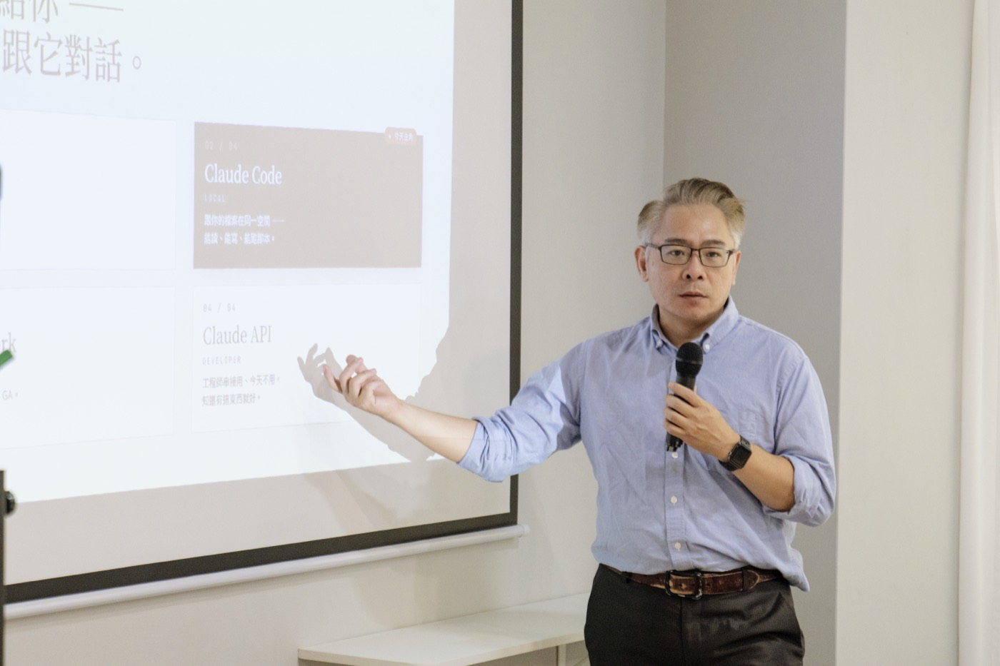
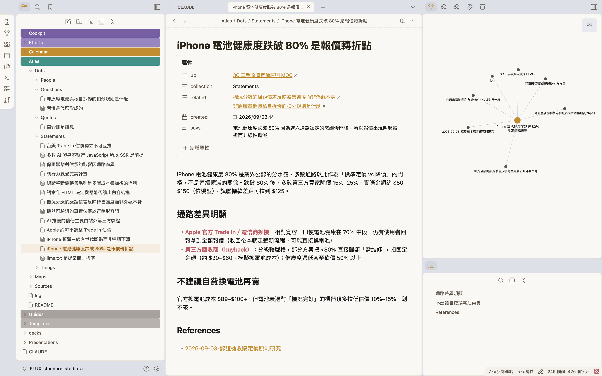
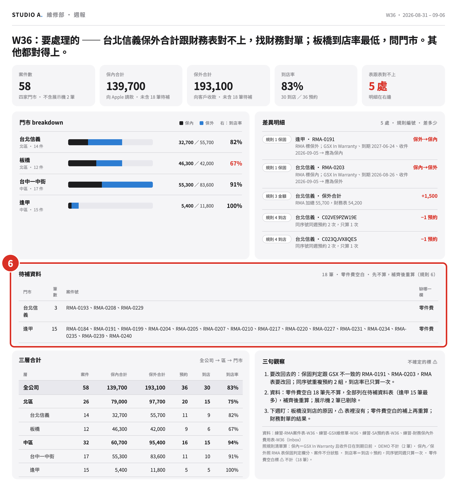
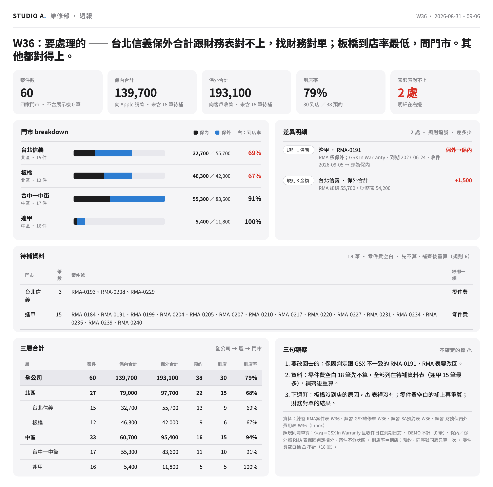
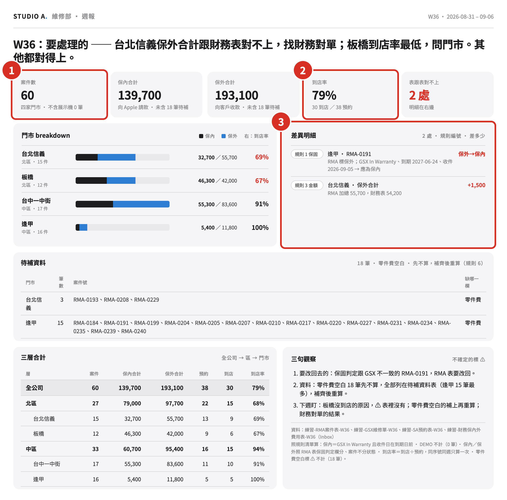
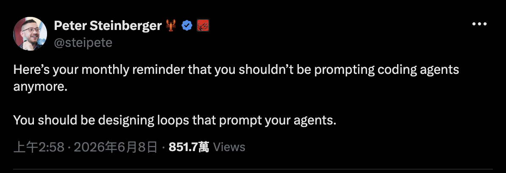

STUDIO A. ／ E 組
2026 / 09 / 04維修部 ＋ 教育事業部 ＋ 事業發展部 ＋ pqi · 11 人
建立我們的
AI 工作環境。
AI 工作環境。
一個 AI 工作環境 · 一座個人知識庫 · 一個自己寫的維修週報 skill · 一個對帳的 auditor · 一個你自己題目的第一版。
講師 余文皓
匯流顧問有限公司
2026 / 09 / 04
1
STUDIO A · E 組 · 2026/09/04
開場20 MIN
這一年，你的動態牆大概長這樣。
AI 取代
會被淘汰
再不學就來不及
這些工作最先消失
白領首當其衝
不是 AI 取代你，是會用 AI 的人取代你
五年內消失的職業
企業導入 AI 後裁員
Agent 元年
AI 焦慮
人力精簡
一人公司
同事已經在用了
你還在用人工？
提示工程
AI 素養
落後就追不上
不轉型就淘汰
數位轉型
學不完
每週都有新的
先卡位再說
2
開場
開場20 MIN
所以許多人開始追。
問答 · 查東西
ChatGPT · Claude · Gemini · Grok · Perplexity
讀一疊資料
NotebookLM · Perplexity Spaces · 各種 PDF 問答
簡報 · 做圖
Gamma · Canva AI · Napkin · Midjourney · Ideogram
開會 · 逐字稿
Otter · Fireflies · tl;dv · 各家內建的會議摘要
影音 · 配音
HeyGen · Suno · ElevenLabs · CapCut · Runway
寫東西 · 筆記
Notion AI · Heptabase · 各家內建的寫作助手
自動化 · 代理
n8n · Make · Zapier · Manus · 一堆自訂 GPTs
⋯⋯還有上禮拜才存下來、到現在還沒點開的那幾個。
確實都比較快了 —— 但每一個，都只幫我一小段。
3
開場
開場20 MIN
一小段、一小段 ——
下班之後，散在各個地方。
下班之後，散在各個地方。
NotebookLM 讀完的，留在 NotebookLM。Gamma 做的簡報，留在 Gamma。三個月後你要找那份東西 —— 記得在哪一個裡面嗎？
開場 · 20 MIN
4
開場
所以今天建一個工作環境
建一個AI 工作環境。
那二十個入口
在別人的網站上
你去它那裡、用完就走
東西留在它家，不在你家
下次再從頭講一次你是誰
明年換一個新的 —— 重來
一個工作環境
在你自己的電腦裡
它讀得到你的檔案
做出來的東西留在你的資料夾
它記得你是誰
用越久，它越知道你怎麼做事
二十個入口→ 一個地方。
5
開場
STUDIO A.
今天的成果五樣 · 都是你自己的
今天結束，你手上會有這五樣。
不是五份筆記 —— 是五個做好、能繼續用的東西。
上午 · 09:50 起
AI
工作環境
工作環境
住在你自己電腦裡、讀得到你檔案的一個地方。用越久，它越知道你怎麼做事。
上午 · 11:35 起
個人
知識庫
知識庫
你查過的行情、規則，自己排好隊 —— 下個月再問一次，它還找得到。
下午 · 13:30 起
自己寫的
維修週報 skill
維修週報 skill
四張表丟進去、一份週報出來。包成一句話 —— 下次說「跑維修週報」就好。
下午 · 14:55 起
一個對帳
的 auditor
的 auditor
它自己驗過，再交另一個它對一次 —— 對不上就打回，過了才給你。
下午 · 15:45 起
你自己題目
的第一版
的第一版
換成你手上每週都要做的那一件 —— 同樣四步，這次沒有人帶著你走。
五樣都是你自己的 —— 不是我 demo 給你看的。9/11 再加兩樣：給主管的簡報、你想隨時看得見的東西。
6
開場
我是誰開場前 · 30 秒
我是余文皓。
7 年
工程師
→
10 年
專案經理
→
3 年
數據分析
→
Minerva · MDA
決策分析碩士
→
2025 · 第一批
Claude Code 使用者
→
2026
匯流顧問成立
我在公司裡上了二十年的班 —— Nokia、聯詠、友達，科技業。
2023 年邊上班邊唸碩士，整個過程跟 AI 一起做。2025 年離開公司。
Claude Code 第一批使用者 —— 拿它做產品、管公司、也管生活。今年成立匯流顧問。
Anthropic 官方認證 ＋ 官方夥伴
個人
Claude Certified Architect – Foundations
公司
Claude Partner Network · 匯流顧問有限公司



新工具還是會一直出 —— 我已經不追了。今天之後，你也不用。
7
開場
輪到你一句話 · 互相認識
開始之前 —— 一句話，讓大家認識你。
說兩件事
你的名字，
再加一句話。
再加一句話。
A
今天想帶走什麼 —— 手上卡住的那件事。
B
用過 AI 嗎 —— 哪些工具、用起來怎麼樣。還沒真的用過也沒關係。
今天這一屋子 · 11 位
維修部 · 4
Becky
Villain
Mike
Uriko
教育事業部 · 1
Kay
事業發展部 · 1
Keisha
pqi · 5
Smile
紫莉
玉雯
玉如
子祐
一整天
卡住舉手 —— 我在桌邊。先做完的：把手邊那份報表打開放著。
8
開場
系統認知30 MIN
互相認識了 ——
接下來，認識你的工具。
接下來，認識你的工具。
先看看現在的 AI 工具
9
系統認知
系統認知30 MIN
不是只有一個 AI —— 三家都在鋪一整排入口。
OPENAI
你們最可能已經在用的那家
GOOGLE
綁在 Search、Gmail、Chrome 裡
ANTHROPIC · 今天用這家
公司課前幫你們裝好的
在瀏覽器裡聊天
ChatGPT
Gemini
Claude.ai
在你的電腦上 · 跟你的檔一起工作
Codex
Antigravity
Claude Code ★ 今天主角
桌面 agent · 不用寫程式
ChatGPT Work 7 月新的
—
Claude Cowork
在你原本的文件工具裡
—
Gemini in Workspace
Claude in Excel · PowerPoint
給工程師串接
API
AI Studio
API
這半年收掉的：Sora（4/26 關） · Gemini CLI（6/18 關） · ChatGPT Atlas（8/9 關 —— 上週才收的）
10
系統認知
系統認知30 MIN
Claude 給你 —— 越來越多地方跟它對話。
Claude API
DEVELOPER · 開發者
工程師串接用、今天不碰。知道有這個。
GA · 2023 / 03
Claude.ai
BROWSER · 瀏覽器
開分頁跟它聊天。跟 ChatGPT 同一類。
GA · 2023 / 07
★ 今天主角
Claude Code
LOCAL · 本機
跟你的檔案在同一空間 —— 能讀、能寫、能跑。
GA · 2025 / 05
Claude Cowork
DESKTOP · 桌面 App
知識工作者的桌面版。跟 Code 像、長相不同。
GA · 2026 / 04
Claude Design
VISUAL · 設計
用對話做簡報、設計稿 —— 有興趣回家自己玩。
2026 / 04 · 研究預覽
把剛才那一欄放大 —— 同一家、五個入口，差別在你在哪跟它講話。今天我們用最能跟你檔案一起工作的：Claude Code。
11
系統認知
系統認知30 MIN
先把你的
工作環境打開。
工作環境打開。
環境＋記得你 · 40 MIN
12
系統認知
系統認知30 MIN
先打開工作資料夾 —— Claude 才讀得到你的檔。
1
點左邊最上面的檔案總管
像兩張紙疊在一起的那個圖示。
2
按「開啟資料夾」
3
選桌面上的 FLUX Vault Studio a
左側就出現工作資料夾的檔案樹

先開工作資料夾Claude 只讀「你打開的那個資料夾」—— 動手前一定要先開。
13
系統認知
系統認知30 MIN
今天的工作台 —— VS Code 一個就夠。

1
檔案總管
你的工作資料夾攤在左邊 —— 哪個檔在哪，一眼看得到。
2
編輯器
中間這塊 —— Claude 改的、你自己改的，都在這裡看。
3
對話入口
右邊那一欄 —— 你跟它講話的地方。
今天所有的動手都在這一個視窗裡 —— 檔案、編輯、跟它講話，不用切來切去。
14
系統認知
系統認知30 MIN
右邊那一欄 —— 它就是一個對話框，跟 ChatGPT、Claude.ai 一樣。
你平常用的
ChatGPT · Claude.ai
幫我把這段話改得口語一點。
好 —— 我改好了，你看看這樣順不順。
VS Code 右邊那一欄

打字打這裡
先切到 Auto ↘
你今天只會做這兩件事
1
用中文和 Claude 對話
跟你傳訊息給同事一樣 —— 想到什麼就打什麼。
2
現在先切到 Auto
右下角那個 Auto —— 切過來，它做事就不會一路停下來問你。
中間會刷出一堆看不懂的字、有時候還蹦出怪符號 —— 那是它在做事，不是你弄壞了。不用擔心。
打字的地方換了你要打的東西沒變 —— 一樣是講人話，一樣是它回你。
15
系統認知
系統認知30 MIN
既然和 ChatGPT、Claude.ai 一樣，
那今天為什麼不用它們？
那今天為什麼不用它們？
先動手 · 做完你就知道差在哪
16
系統認知
系統認知30 MIN
它住在你的電腦裡面。
試試看 · 把這句丟給它
> 我覺得電腦有點慢。幫我看看：記憶體總共多大、現在被哪些程式吃最多、哪些可以安全關掉？順便看硬碟還剩多少、什麼佔最大。
> 我覺得電腦有點慢，幫我看看記憶體…
⏺ 看系統狀態（top · vm_stat · df · du）…
⎿ 記憶體：共 16 GB、已用 13.8 GB（偏高）
⎿ 吃最多：Chrome（38 分頁）2.9 GB · Slack 1.1 GB · 預覽 0.8 GB
⎿ 可關：Chrome 舊分頁 + 沒在用的 Slack ≈ 放掉 3–4 GB
⎿ 硬碟：500 GB 剩 42 GB · Downloads/ 46 GB 最大宗
⏺ 建議：關掉沒用的 Chrome 分頁 + 清 Downloads，會明顯順。
它看到的是你這一台不是你貼上去的東西 —— 是你現在真實的狀態。瀏覽器裡的 AI 看不到這些。
17
系統認知
系統認知30 MIN
換成 ChatGPT、Claude.ai —— 這三件事會變怎樣？
CHATGPT / CLAUDE.AI · 在瀏覽器
CLAUDE CODE · 在你電腦上
它看得到什麼
✗只看得到你貼上去、傳上去的東西
✓你這台機器、你整個資料夾
它能不能動手
✗只能告訴你怎麼做 —— 動不了你的檔案
✓自己做 —— 剛剛它真的跑了指令
做完的東西放哪
✗停在分頁裡 —— 要自己複製或下載回來
✓寫回你的資料夾，存檔就在那
差別不是誰比較聰明是它在不在你工作的地方 —— 一個在分頁裡，一個在你的電腦裡。
18
系統認知
系統認知30 MIN
它在你的電腦裡 ——
那你的東西，放哪？
那你的東西，放哪？
你的工作區 · FLUX
19
系統認知
FLUX 基礎40 MIN
你的 AI 工作環境長這樣 —— 7 個資料夾 + 1 份說明書。
~/Desktop/FLUX Vault Studio a
FLUX Vault Studio a/
├── CLAUDE.md ★
├── Cockpit/ ★
├── Efforts/ ★
├── Atlas/ ★
├── Inbox/ ★
├── Calendar/
├── Guides/
└── Templates/
CLAUDE.md
助理使用說明書 · 最上面那一個檔
上午
Cockpit/
控制中心 · 本週要推進的 3–5 件寫這
上午
Efforts/
你的專案 ＋ 領域（PARA）
上午
Atlas/
知識卡 ＋ 來源（卡片盒）
上午
Inbox/
查到的東西先落這，之後再整理
上午
Calendar/
個人日記 ＋ 時間軸
Guides/
操作手冊 · SOP
Templates/
模板 · 已設好初版
沒有雲端、沒有帳號 —— 就是你電腦上一個資料夾。今天會用到上面五格，剩下三格先看過。
20
FLUX 基礎
STUDIO A.
動手一件事 · 2 MIN
開始之前 —— 先讓它存得住。
今天你會一直改這個資料夾。先做一件事，之後改壞什麼都回得去。
複製這一句、貼進去、ENTER
貼上、ENTER
> 幫我看這個工作資料夾有沒有在記錄改動（git）。
沒有的話建起來，存第一個檔，
記錄成「上課前的樣子」。
它會做三件事
1
看這個資料夾有沒有在記錄改動
2
沒有的話 —— 建起來
3
存下第一個版本
記錄成「上課前的樣子」。
之後哪一步做壞了 —— 跟它說「回到上課前的樣子」就好。
先做完的：叫它列一下這個資料夾裡現在有哪些檔。
存得住
02:00
21
FLUX 基礎
STUDIO A.
左邊點開 CLAUDE.md副檔名是 .md
那 Markdown 是什麼？—— 就是一種檔案格式。
你左邊看到的
FLUX Vault Studio a/
├── CLAUDE.md ←
├── Home.md
├── Atlas/
├── Cockpit/
├── Efforts/
├── Inbox/
└── Templates/
每個資料夾打開
裡面幾乎都是 .md
裡面幾乎都是 .md
跟這些是同一類東西
副檔名
用什麼打開
AI 讀起來
.pdf
Acrobat
要先把文字挖出來，版面常常跑掉
.docx
Word
一堆看不見的排版設定包在裡面
.xlsx
Excel
格子要另外拆，欄位對不上就錯
.txt
記事本
讀得到 —— 但哪句是標題、哪句是重點，分不出來
.md
任何一個編輯器
純文字 ＋ 幾個符號 —— 是純文字，又看得出結構
AI 就做兩件事 —— 讀文字、吐文字。所以它最好讀的，就是純文字那一種。
22
FLUX 基礎
同一份檔兩種看法
那幾個符號 —— 按兩個鍵就變成排版。
同一份檔、沒有第二個版本 —— ⌘ ⇧ V 切過去就是右邊那個樣子。
你打的 —— 純文字 + 幾個符號
# 本週
**主要任務**
- 這週 eSIM 各平台的價格
- 比我們貴的 / 比我們便宜的分開列
- 回美術那三封需求信
⌘ ⇧ V
→
渲染
排版之後 —— 讀起來的樣子
本週
主要任務
• 這週 eSIM 各平台的價格
• 比我們貴的 / 比我們便宜的分開列
• 回美術那三封需求信
• 比我們貴的 / 比我們便宜的分開列
• 回美術那三封需求信
AI 看得懂 · 不綁任何工具 · 100 年後還打得開。 它寫得了，你也讀得懂 —— 中間不用轉檔。
23
FLUX 基礎
FLUX 基礎CLAUDE.md 是什麼
Claude Code 沒有記憶。
?
PROBLEM · 問題
01每次打 claude = 全新對話
02教過的事 · 它不記得
03昨天的設定 · 今天從頭問
是它的設計、不是 bug。
靠什麼解決
↓
✓
SOLUTION · 解法
CLAUDE.md
01每次開機第一件事就讀它
02寫一次 · 它每次都記得
03你的 FLUX Vault 裡 · 已經有一份
Claude Code 的使用說明書。
24
FLUX 基礎
STUDIO A.
開機的時候它先做三件事
你打一個 claude —— 它先做三件事。
你打一個 claude，按 ENTER
↓
01
讀 CLAUDE.md
你是誰 · 那一整套規矩 · 你說什麼它做什麼。下一頁放大看。
↓
02
點一遍它的工具
它能動的手 —— 讀檔 · 寫檔 · 跑指令 · 上網查。
↓
03
掃一遍現成的 skill
只讀名字和一句話 —— 你用到哪個，它才翻開那一個的內容。
↓
準備好了 —— 等你講第一句話
每次開機這三樣自己就位一次 —— 你一句話都不用交代。
第 ③ 樣現在裝的都是別人寫好的 · 下午你會自己寫一個
25
FLUX 基礎
STUDIO A.
放大第 ① 件CLAUDE.md 裡面有什麼
打開來看 —— 539 行、22 個段落。
CLAUDE.md — FLUX Vault Studio a
# FLUX Vault — AI 指令（STUDIO A 員工版）
## 你是誰
- 稱呼：阿明
- STUDIO A 職位：電子商務部 · 商品上架
- 直屬主管（可選）：先空著
## 互動前必做
## 基本行為
## 執行力規則
## Vault 安全規則
## 時間處理規則
## 溝通風格
## 系統結構
## 重要檔案
## 路徑規則
## 模板對應
## 觸發語對應
## 開工 ## 收工 ## WAM ## Inbox 批次處理
## 調整本週 ## 記錄想法
## 個人日記 ## 求助 ⋯⋯
你是誰
稱呼 / 職位 / 主管 —— 它每次開新對話先讀這一段。 · 3 欄
規矩
講繁體中文 · 收到任務就做 · 刪檔前先問你。 · 4 段
講話方式
先給結論再給理由 · 最多給 2 個選項。 · 1 段
地圖
哪個東西該放進哪一格資料夾。 · 4 段
暗號
你說一句話，它跑一整套 —— 「記錄想法」「處理 Inbox」… · 9 段
整份 539 行，都是別人先幫你寫好的。今天你只動最上面那 10 行。
26
FLUX 基礎
STUDIO A.
動手它認不認得你 · 3 MIN
換你 —— 先問它一句：「你知道我是誰嗎？」
8/26 已經填過的，它會直接答出來。沒填過的，接著跟它一起填。
每個人都先貼這一句
貼上、ENTER
> 你知道我是誰嗎？
✓ 它說得出你的稱呼、部門、手上在做什麼
—— 那你已經好了，這一輪你不用做事。
—— 那你已經好了，這一輪你不用做事。
✗ 它答不出來的話
直接用講的告訴它你是誰 ——
叫它更新進去。
叫它更新進去。
1
怎麼稱呼你
2
你在 STUDIO A 做什麼
部門 ＋ 手上負責的事。
3
直屬主管是誰
可選 —— 不想填就說跳過。
填完，之後每次開新對話它都先讀這三欄。
認得你
03:00
27
FLUX 基礎
STUDIO A.
左邊點開 Inbox七格裡最好用的一格
Inbox —— 就是一個暫存區。
就是你 Outlook 的收件匣 —— 想到什麼、查到什麼，還沒想清楚要放哪，先丟這裡。
你左邊點開會看到
Inbox/
├── deep-work-書推薦.md
└── 選項太多反而拖延.md
└── ＋ 你自己的 ← 上午會多出來
裡面那兩個是範例筆記 —— 等一下就把它清掉。
動手 ① · 先把它清空
貼上、ENTER
> 把 Inbox 裡的檔案清掉。
動手 ② · 剛剛動過了，存一個檔
貼上、ENTER
> 看一下我剛剛改了什麼，
然後存起來，記錄成「清空 Inbox」。
你現在有兩個存檔點 ——「上課前的樣子」和「清空 Inbox」。今天改壞什麼，都回得去。
這個「先收進來、之後再一次處理」的做法有名字 —— GTD（Getting Things Done）
28
FLUX 基礎
STUDIO A.
剛剛那一下你做了什麼
你剛剛存的 —— 是一個回得去的時間點。
今天到現在，你已經存過兩次。
你的存檔紀錄
●
剛剛
清空 Inbox
刪掉兩個範例筆記
●
09:55
上課前的樣子
什麼都還沒動
1
它不會自己存
你要說一聲。做完一段、覺得「這樣可以」，就存一次。
2
想回去，說一聲就好
跟它說「回到上課前的樣子」—— 它會把整個工作資料夾轉回那個時候，不是只轉一個檔。
今天你會一直叫它改東西 —— 存過檔，就不用怕改壞。
29
FLUX 基礎
FLUX 基礎下一格
它認得你了，東西也存得住了 ——
那你手上那些事，放哪？
那你手上那些事，放哪？
上架、檔期、競品比價、美術需求、客服內容 —— 一天有十件事在跑。它們現在散在你的 Mail、Excel、和腦袋裡。
接下來這一格叫 Efforts
30
FLUX 基礎
放大 Efforts你所有在做的事
都放這一格 —— Efforts。
~/FLUX Vault Studio a
├── Inbox/
├── Cockpit/
├── Efforts/ ◀ 你所有在做的事
│ ├── Areas/ 持續經營
│ ├── Projects/ 有結束日
│ └── OVERVIEW.md
├── Atlas/
├── Calendar/
└── CLAUDE.md
上架、檔期、競品追蹤、美術需求 ——
一天十件事，全部住在這裡。
一天十件事，全部住在這裡。
Cockpit 放你的「本週要推進什麼」；Efforts 放事情本身 —— 分成兩種：持續的 Area、有結束日的 Project。
這一格裡面還分兩種 —— 下一頁把 Area 和 Project 分清楚。
31
FLUX 基礎
為什麼放進來你的檔案 ＝ 它的燃料
同一個 AI —— 差別在你給了它多少你的東西。
空手問它 · 沒你的資料
「幫我看這檔活動賣得好不好」
↓
只能給你通用的電商分析框架 —— 一堆你早就知道、跟這一檔無關的原則。
它不認識你的現場
把現場給它 · 這檔的銷售 ＋ 去年同期 ＋ 檔期設定
同一句話
↓
直接算出這一檔的實際成長、抓出哪幾支商品拉不動、照你們的格式列出來。
它拿你的真實資料在做事
不是它變聰明是你給了它「你的現場」——你放進 Efforts 的每份檔案，都是它下次幫你做事的燃料。
CLAUDE.md 給它「你是誰」、Efforts 給它「你在做什麼」——都是 context。重點是放相關、整理好的（所以才分 Area / Project）——不是把整台電腦倒進去。
32
FLUX 基礎
兩種 Effort分清楚
兩種要分清楚 —— 你的 Area、你的 Project。
∞Area
沒結束日 · 你長期負責的職能
01保險稽核
02RMA 案件登打與跟催
03維修單與 GSX 對帳
04客戶到店預約管理
05保內外費用核對
沒有結束日 → Area
這件事
有結束日
嗎？
有結束日
嗎？
⚑Project
有結束日 · 做完就結案的成果
01認證機配貨 （到貨結案）
02W36 維修週報建置
03逢甲門市稽核 （9/20）
04auditor 規則清單建置
05新進機型保固規則校對
有結束日（即使很遠）→ Project
不確定的 → 先放 Area，之後隨時能改。等下 Claude 也會幫你分。
33
FLUX 基礎
換你兩步 · 交給 Claude 整理
換你 —— 兩步，把手上的工作交給 Claude 整理。
1
討論 + 建立結構
講你在忙什麼 → Claude 幫你分 Area / Project、建好資料夾。
2
檔案丟進 Inbox、歸位
把工作檔（RMA 案件表、GSX 維修單、保固費用表…）拖進 Inbox → Claude 幫你分進對應 Area / Project、原檔留著。
你只講人話 · Claude 動手
> 我負責商品上架、檔期活動、競品追蹤…
幫我分成 Area / Project
Claude 建好 Efforts/Areas/…
Claude 建好 Efforts/Projects/…
每個放一個 README 骨架
先想 30 秒
你這週手上有哪些事？—— 不用分類、想不清楚也沒關係，等下 Claude 會問你、幫你分。
34
FLUX 基礎
動手 ①跟 Claude 討論 ＋ 建立
第一步 —— 跟 Claude 討論 + 建立。
複製這段 · 貼進 Claude · ENTER
> 我想用你整理我的工作。先別急著建、我們先討論 ——
① 根據我的角色，猜我長期負責的事（→ Area）、讓我確認補漏。
② 問我有截止日的專案（→ Project）、deadline 何時。
③ 問我要不要加個人 Area（健康／家庭／學習）—— 想加再加。
歸成 Area + 1-2 個 Project 給我確認 → 同意後建資料夾 + README。
CLAUDE 會這樣陪你跑
猜你的 Area→問專案 + deadline→你確認→建好資料夾
35
FLUX 基礎
動手 ①討論 ＋ 建立 · 8 MIN
動手 ~8 分鐘 —— 跟 Claude 討論、建好結構。
討論 + 建立
08:00
Claude 問你 → 提案 Area / Project → 你確認 → 它建好資料夾。
它分得怪怪的 —— 不用急著改，我會逐桌看。
它分得怪怪的 —— 不用急著改，我會逐桌看。
36
FLUX 基礎
動手 ②拖進資料夾 → Claude 檢查
第二步 —— 把工作檔拖進資料夾，Claude 幫你檢查。
A
自己拖進對應資料夾
把你的工作檔（RMA 案件表、GSX 維修單、保固費用表…）直接拖到 VS Code 側邊欄裡、動手①剛建好的 Efforts/ 對應 Area / Project 資料夾。
Finder 按住 ⌥ 拖進去 —— 複製一份進來、原檔留著。
B
叫 Claude 檢查
拖完貼右邊這段，請它看你放得對不對、有沒有放錯地方，順便補 README。
複製這段 · 貼進 Claude · ENTER
> 我把工作檔拖進對應的 Area / Project 資料夾了。
檢查 Efforts/ 每個資料夾，放得對不對、有沒有放錯地方，列出來跟我確認。
確認後更新 README、回報檢查結果。
放心
原檔不會動 —— 用 ⌥ 拖是複製一份進來。Claude 抓到放錯的會先問你，不會自己搬。
37
FLUX 基礎
動手 ②拖進資料夾 → Claude 檢查 · 8 MIN
動手 ~8 分鐘 —— 拖進資料夾、讓 Claude 檢查。
拖資料夾 → 檢查
08:00
把檔案拖進對應資料夾 → 貼 prompt → Claude 檢查放得對不對、補 README。
它抓到放錯的會先問你，不會自己搬。
它抓到放錯的會先問你，不會自己搬。
38
FLUX 基礎
做完了你剛剛建好的
剛剛那幾分鐘 —— 你的 Efforts 長這樣了。
~/FLUX Vault Studio a/Efforts
📂 Areas/ 持續經營
├── 保險稽核/ 維修單.xlsx · README
├── RMA 案件跟催/
├── 保內外費用核對/
└── 健康/ 個人 · 可選
📂 Projects/ 有結束日
└── 認證機配貨/ ⚑ 到貨結案
配貨清單.xlsx · README
你只講了人話 ——
分類、建資料夾、歸檔，都是 Claude 做的。
分類、建資料夾、歸檔，都是 Claude 做的。
Area 是你長期的職能、Project 有 deadline —— 你的檔案各就各位。原檔還在原地，這裡是 Claude 複製整理的一份。
沒建完也沒關係 —— 結構在了，之後隨時叫 Claude 補。
39
FLUX 基礎
FLUX 基礎下一格
事情都有地方住了 ——
那今天先動哪一件？
那今天先動哪一件？
Efforts 放的是「你有哪些事」。但每天早上坐下來，你還是得決定「今天做哪三件」—— 那是另外一格。
接下來這一格叫 Cockpit · 你的駕駛艙
40
FLUX 基礎
放大 Cockpit你的控制中心
今天做哪幾件 —— 寫在駕駛艙裡。
~/FLUX Vault Studio a
├── Inbox/
├── Cockpit/ ◀ 你的控制中心
│ ├── Weekly-Commitment.md 本週 3-5 件
│ └── Daily/ 今天 3 件
├── Efforts/
├── Atlas/
└── CLAUDE.md
Cockpit ＝ 駕駛艙。
這週要推進的 3-5 件寫在這。
這週要推進的 3-5 件寫在這。
做到打勾、沒做到記下為什麼。節奏：每天「開工」執行、週五「結算本週」收尾。（結算等一下講。）
開工、看今天做什麼 —— 都從 Cockpit 開始。等下你親手寫一份本週。
41
FLUX 基礎
動手寫本週的 3–5 件
接下來 —— 寫本週的 3-5 件事。
複製這段 · 貼進 Claude · ENTER
> 我要排本週的 Weekly Commitment。
你已經知道我的 Area 和 Project 了。
幫我想本週最該推進的 3-5 件：
看哪個 Project deadline 近、哪些 Area 要顧，列出來問我。
我確認後，寫進 Cockpit/Weekly-Commitment.md。
CLAUDE · 看你的 EFFORTS 提案
看你的 Project 和 Area —— 本週我建議這 4 件：
· 認證機配貨清點確認 （Project · 交期快到）
· 這週 RMA 案件跟催 （RMA 案件跟催）
· 積壓的三筆保固費用核對 （保內外費用核對）
· 逢甲門市稽核前置作業 （保險稽核）
這樣 OK 嗎？要加要減跟我說 ——
確認我就寫進 Weekly-Commitment.md。
HANDS-ON · 8 MIN · 跟 CLAUDE 對話
01Claude 看你的 Area/Project 提案、你改
023-5 件就好、別貪心
03寫完 → 接著第一次跑「開工」
42
FLUX 基礎
動手Weekly Commitment · 8 MIN
動手 8 分鐘 —— 寫你的本週 3-5 件。
Weekly Commitment
08:00
3-5 件就好、別貪心 —— 講 deadline 讓 Claude 排優先序。
寫完接著第一次跑「開工」。
寫完接著第一次跑「開工」。
43
FLUX 基礎
動手第一次跑「開工」
第一次跑 —— 看 Claude 幫你整合今天。
YOU · 一句話
~/FLUX Vault Studio a $ claude
> 開工
就這樣 —— Claude 會自動讀你的工作資料夾。
CLAUDE · 整合你的今天
早安 {你的名字}！今天 9/4 週五。
你的 Areas（5）：
保險稽核 / RMA 案件跟催 / 維修單與 GSX 對帳 / 客戶到店預約管理 / 保內外費用核對
Active Projects（1）：
認證機配貨（剩 ~3 週）
本週 Weekly Commitment：
4 件、這週要把積壓的保固費用核對清掉。
📌 今天 3 件事：
1. RMA 案件跟催（2 hr）
2. 認證機配貨清點確認（1.5 hr）
3. 積壓的保固費用核對（1 hr）
要我建立今天的 Daily Note 嗎？
HANDS-ON · 5 MIN · 開工
01講「開工」、Claude 自動讀工作資料夾
02看它怎麼把 Efforts ＋ Weekly Commitment → 今天 3 件事
44
FLUX 基礎
動手開工 · 5 MIN
動手 5 分鐘 —— 跑你的「開工」。
開工
05:00
講「開工」、Claude 自動讀工作資料夾。
看它怎麼把 Efforts ＋ Weekly Commitment 整合成今天的 3 件事。
看它怎麼把 Efforts ＋ Weekly Commitment 整合成今天的 3 件事。
45
FLUX 基礎
觀念收工 ＝ 開工的鏡像
下班前一句話 —— 跟 Claude 收尾今天。
早上 · 開工
> 開工
Claude 問你 ——
「今天要做什麼？」
「今天要做什麼？」
→ Daily Note · planning
下班前 · 收工
> 收工
Claude 問你 ——
「今天做了什麼？」
「今天做了什麼？」
→ Daily Note · review
為什麼現在不練
收工要在「一天結束」才有意義 —— 我們在今天最後那一段一起跑一次。
46
FLUX 基礎
觀念每週五 · 結算本週
每天開工收工 —— 每週五，還有一次 「結算本週」。
① 回顧本週
這週的 3-5 件 ——
哪些做完、哪些沒、為什麼。
哪些做完、哪些沒、為什麼。
② 排下週
下週的 3-5 件 ——
就是你剛剛做過的動作。
就是你剛剛做過的動作。
> 結算本週
週五下班前跟 Claude 說這句 —— 它帶你回顧本週、排下週。
回去之後
今天之後 —— 每天開工收工；週五自己跑一次「結算本週」，週清單才不會斷。沒有人會盯你 —— 這是你自己的節奏。
47
FLUX 基礎
休息一下10 分鐘 · 回來接著做
休息
10:00
站起來走一走、喝個水。
回來還有五段 —— 知識管理 · 接上信箱行事曆 · 建立 skill · 配一個對帳的 auditor · 換你自己的題目做一個。
接下來全部都是動手。
回來還有五段 —— 知識管理 · 接上信箱行事曆 · 建立 skill · 配一個對帳的 auditor · 換你自己的題目做一個。
接下來全部都是動手。
電腦別關 · VS Code 跟 Claude 開著
48
休息
知識管理東西放哪
系統會跑了 ——
那你查過的東西呢？
那你查過的東西呢？
前面兩站，你把要做什麼裝進去了。
接下來這 40 分鐘，裝的是你讀過、查過、判斷過的東西 —— 而且要讓它半年後還找得回來。
接下來這 40 分鐘，裝的是你讀過、查過、判斷過的東西 —— 而且要讓它半年後還找得回來。
知識管理 · 40 MIN
49
知識管理
知識管理這一站兩件事
這 40 分鐘 —— 你會帶走兩樣東西。
01
一個半年後還找得到的知識庫
不是暫存、不會被歸檔、不會結案搬走。
你今天查的東西，明年還調得出來。
你今天查的東西，明年還調得出來。
02
用你自己的題目跑一次
查完、拆完、存進去 —— 卡片留在你的 Atlas，
每一張都指得回原文。
每一張都指得回原文。
帶走的不是筆記是一套會繼續長的東西 —— 今天查的，下次不用重查。
50
知識管理
先想一個場景你查過的東西散在哪
上個月查過的那件事 —— 現在找得到嗎？
同事
上次你比過那幾個 —— 我們最後為什麼選這個？老闆在問。
你
等我找一下 —— 翻信箱、翻桌面那個「暫存」資料夾、翻上次的群組訊息⋯⋯
我明明查過的⋯⋯那份比較到底存到哪去了。
不是你查得不夠是你查過的東西沒有地方放 —— 找不到就重查一次，等於沒查過。
51
知識管理
知識管理先記住這一句
你查到的東西 ——
預設是會不見的。
預設是會不見的。
除非你把它放進一個不會被清掉的地方。
那個地方在哪 · 等一下就知道
52
知識管理
為什麼會不見那幾個資料夾
因為你有的資料夾 —— 全部是暫時的。
Cockpit/Daily
每個月歸檔一次，舊的收進 archive
暫時
Efforts/Projects
案子結案，整個資料夾搬走
暫時
Efforts/Areas
一直堆，堆到後來自己也找不到
暫時
Inbox
本來就是要定期清空的
暫時
沒有一個是設計來放「半年後還要用」的東西那 —— 半年後還要用的，到底該放哪？
53
知識管理
別人怎麼解的這問題不新
這問題 ——
六十年前就有人解過了。
六十年前就有人解過了。
ZETTELKASTEN

《卡片盒筆記》
Sönke Ahrens 寫的一本書 —— 講的是德國社會學家 Luhmann 的做法。
他用一盒卡片，一輩子寫出 70 本書 ＋ 400 篇論文。
他的做法只有三件事
01
一張卡只寫一個東西 —— 不把三件事塞進同一張。
02
卡跟卡互相連起來 —— 連久了就變成一張網，不是一疊紙。
03
要用的時候去翻那張網 —— 不是從零開始想。
這套做法搬進電腦裡 —— 卡片變成檔案，連結變成點得動的連結。
54
知識管理
那套做法 · 第 1 條一張卡只放一個
一張卡只寫一個 —— 怎樣算一個？
寫完唸一次 —— 一句話講得完，就夠小了。
01
只放一個概念
02
單獨拿出來看得懂
03
別的案子也引用得到
04
檔名就是那句結論
四個都對，才叫一張卡。
55
知識管理
知識管理一張卡的三段
一張卡 —— 三段，就這樣。
① 檔名 · 就是那句結論
機況分級的級距價差反映轉售難度而非外觀本身.md
光看檔名就知道裡面在講什麼 —— 不用打開。
② 上半 · 標籤跟連結
這張是哪一類、掛在哪個主題下、跟哪幾張有關。
③ 下半 · 內容
為什麼是這個結論、證據、還有 —— 從哪份來源拆出來的。
卡片打開的樣子
機況分級的級距價差反映轉售難度而非外觀本身.md
---
up: "[[3C 二手收購定價原則 MOC]]"
collection: Statements
related: "[[iPhone 電池健康度跌破 80% 是報價轉折點]]"
created: 2026-09-03
says: "機況分級級距因為反映整新與降價成本，
所以是轉售難度的反推，不是外觀比例公式"
---
3C 回收商的機況分級級距價差，本質是「這台
機器要花多少整新／降價才能賣出」的
反推，不是單純依外觀損傷程度算出的機械式比例公式。
## References
- [[2026-09-03-認證機收購定價原則研究]]
56
知識管理
卡片放哪就四樣
拆出來的卡放哪？—— Dots。旁邊還有三樣。
資料夾 01
Sources
完整的原始來源
像書櫃 —— 整份平台公告、整篇文章、整支影片。一個來源一個檔。
資料夾 02
Dots
一張卡一個概念
像你在書上畫的重點 —— 從整份裡面挑出來、單獨拿出來還看得懂的那幾句。
資料夾 03
Maps
同一個主題的索引
像你自己整理的書單 —— 同一個主題的卡累積到三張以上，就建一張。
＋ 一本帳
log.md
歸檔記帳本 —— 哪天收了哪份、拆了哪幾張，它自己記一行。
57
知識管理
還空著的那個資料夾ATLAS · 永久
這四樣，住在同一個資料夾 —— Atlas。
~/FLUX Vault Studio a
├── Cockpit/
├── Efforts/
├── Inbox/
├── Atlas/ ★
│ ├── Sources/ 完整來源
│ ├── Dots/ 一卡一概念
│ ├── Maps/ 主題索引
│ └── log.md 歸檔記帳
├── Calendar/
├── Guides/
└── Templates/
規則 01
進來的東西 —— 不歸檔、不清空、不搬走。
半年、一年、三年，它都在原地。
規則 02
放的不是事件，是原則 —— 不會過期的那種知識。
「這一版的頁面長怎樣」會過期；「沒講給機器聽就找不到」不會。
剛剛亮著的是 Cockpit 跟 Efforts —— 你的工作。現在亮起來的是 Atlas —— 你查過的東西。同一個資料夾、同一個視窗，工作跟知識住在一起。
58
知識管理
知識管理兩個資料夾的抽屜
Sources 跟 Dots 裡面，再分抽屜 —— 7 個和5 個。
Sources
整份東西進來，看它是什麼型態，就放哪個抽屜。
Reports/
研究報告
Papers/
論文
Articles/
網路文章
Books/
書
Videos/
影片、線上課
Talks/
演講、研討會
⋯
不夠用再加
Dots
從整份裡拆出來的重點，看它是哪一種重點，就放哪個抽屜。
Statements
一句用得上的結論
Things
一個名詞、一套東西
People
一個人、一個窗口
Questions
還沒想清楚的問題
Quotes
別人講過的原話
59
知識管理
知識管理 · 動手打開你的 ATLAS
現在換你 —— 打開你自己的 Atlas。
~/FLUX Vault Studio a / Atlas
├── Sources/ 完整來源
│ └── Books/2026-01-15-Atomic Habits.md
├── Dots/ 一卡一概念
│ ├── Things/ Claude Code · 卡片盒筆記法 ★
│ ├── Statements/ 執行力贏過完美計畫
│ ├── Questions/ 習慣是怎麼形成的
│ ├── Quotes/ 媒介即是訊息
│ └── People/ Brian Moran · Nick Milo
├── Maps/ 主題索引 PKM · Productivity
└── log.md 歸檔記帳本
1
在左邊點開 Atlas
認出三個資料夾 —— Sources / Dots / Maps —— 和一本 log。
2
點開 Dots / Things / 卡片盒筆記法
你五分鐘前才聽過的那個 —— 裡面已經有一張卡。上半是標籤跟連結、下半是內容。
3
看一下檔名
檔名不是「筆記 1」，是一句話的結論 —— 光看檔名就知道裡面在講什麼。
現在這十幾張是跟系統一起給你的範例。等一下你會加進第一張自己查的。
三個資料夾、一張卡 —— 你現在知道東西存進來會長在哪裡了。
03:00
60
知識管理
知識管理 · 老實說自己跑的話
方法六十年前就有了 —— 撐下去的人，不多。
為什麼？自己跑的話 —— 每收一份，都是這六件事。
01
先判斷 —— 這份，值不值得留？
02
想位置 —— 整份放哪個資料夾？
03
拆卡 —— 拆成幾張？每張都得問一次「怎樣算一個」。
04
寫卡 —— 每張下檔名、填三段。
05
歸位 —— 12 個抽屜選一個，還要想跟哪幾張連。
06
記帳 —— log 補一行。
而且這只是一份的量
今天查一件事 —— 這六步。
一週查十件 —— ×10。
一週查十件 —— ×10。
哪天忙、跳過一次 —— 下次變兩份。
停一陣子沒整理，整套開始對不上。
停一陣子沒整理，整套開始對不上。
那 —— 這一切，得靠你自己做嗎？
61
知識管理
知識管理那誰來做
現在 —— 這一整套，不是你來做。
你 · 出手的
兩件事 —— 丟進來、說一聲
整份丟進來 —— 報告、文章、會議記錄，原樣丟
說一聲要收 —— 剩下的不用管
你出的是判斷：這份值不值得留、這個結論對不對。
它 · 接手的
剛剛那六步 —— 全部它來
拆成幾張卡 —— 它拆，檔名它下、三段它填
每張卡歸哪個抽屜 —— 它選，連結它接
log —— 它記
結構自己會長 —— 停多久都不會散
你不用變成整理的人你只要會講兩個詞 —— 下一頁就是那兩個詞。
62
知識管理
知識管理要記的就這兩個
要記的 ——
就這兩個詞。
就這兩個詞。
[研究]
先翻你的 Atlas、再上網補
查完寫成一份研究報告 → 存進 Inbox
查完寫成一份研究報告 → 存進 Inbox
[歸檔]
把手上這份拆成卡
拆完自己歸位、自己連好 → 落進 Atlas
拆完自己歸位、自己連好 → 落進 Atlas
等一下兩個都會動手 —— 先查、再拆。
知識管理 · 兩個暗號
63
知識管理
動手 · 暗號一第一次跑 [研究]
第一次跑 —— 先查不會過期的那種東西。
認證機收購價，店長問起來常常說不清楚為什麼這台比較低。先把訂價背後的原則查回來 —— 以後有人問，你答得出來。
複製這一段 · 貼進 Claude · 按 ENTER
> [研究] 一台認證機被回收商收購，價格是怎麼訂出來的？
我要的是原則（機況分級、電池健康度、型號世代這類東西怎麼影響價格），
不是現在某一台的報價。查完把完整報告存到 Inbox。
我要的是原則（機況分級、電池健康度、型號世代這類東西怎麼影響價格），
不是現在某一台的報價。查完把完整報告存到 Inbox。
等它跑 · 看它走這條
01 翻你的 Atlas
02 上網補你沒有的
03 給你一段摘要
04 報告存進 Inbox
最後那句「我要的是原則，不是現在哪家排第一」不是廢話 —— 你要什麼形狀的答案，要在問句裡講。不講的話，它會給你今天的排名，那種東西下個月就錯了。
讓它跑完 —— 摘要回來，看它給的是原則還是今天的排名。
08:00
64
知識管理
知識管理 · 產出 ①報告躺在 INBOX 裡
它查完的東西 —— 躺在 Inbox 裡等你。
Inbox / 認證機收購定價原則-研究報告.md
> 內部盤點：vault 內 0 張相關卡片、0 個 MOC
以下全部是新知識
以下全部是新知識
## Key Takeaways
1. 機況分級沒有全球統一標準，各回收商自訂 rubric；業界常見 A/B/C 三級，跟 Apple 官方三級是不同分類系統
2. 電池健康度 80% 是業界公認分水嶺，跌破後第三方通路普遍降價 15–25%
3. 折舊曲線有明顯「世代斷點」——新機發表前後上一代再跌一截，不是平滑曲線
4. 保固狀態對估價的加分效果因通路而異：官方換購加分明顯、第三方買回通常不加分
5. 認證整新機真實淨利要扣平台抽成、整新工本、報廢損耗，遠低於表面差額
⚠️ 非原廠電池扣分規則、私自拆修扣分比例 —— 兩者均未見明確通用公式，列入待補查，沒有硬湊答案
它沒有馬上上網
報告第一行是內部盤點 —— 它先翻過你的 Atlas，確認這題你一張卡都沒有，才出去查。
查得到的，掛著來源（這份 8 個）；
不確定的，它標 ⚠️ 出來 —— 不硬掰。
這一份裡面有兩處 ⚠️。
不確定的，它標 ⚠️ 出來 —— 不硬掰。
這一份裡面有兩處 ⚠️。
這份原檔會留在 Inbox —— 但裡面的東西還沒進 Atlas。
65
知識管理
知識管理 · 暗號一剛剛那份，贏在哪
剛剛那份 —— 跟你自己 Google，差 三件事。
差別
你自己 Google
用 [研究]
從哪裡開始查
—
每次都從零開始。你去年查過同一題，它不知道。
▸
先翻你自己的 Atlas —— 先告訴你「這題你已經有這幾張了」，再去補沒有的。
查回來的東西
—
十幾個分頁，自己讀、自己比、自己判斷哪個是新的。
▸
幫你比對過 —— 哪些是新的、哪些跟你舊卡重複、哪些對不上。
查完之後
—
關掉分頁就沒了。下次要用，再查一次。
▸
整理成一份、直接存起來 —— 下次同一題，它從你這份接著往下走。
第三件事最值錢Google 查十次是十次從零開始；這個查十次，是第十次站在前九次上面。
但這份還躺在 Inbox —— 下一步，拆成卡、放進去。
66
知識管理
知識管理 · 暗號二整份 → 拆成卡
第二個詞 [歸檔] —— 把那一份拆成卡。
複製這一行 · 貼進 Claude · 按 ENTER
> [歸檔] 我剛剛存到 Inbox 的那份研究
不用打檔名 —— 它自己會去 Inbox 抓最新那份。
跑完之後 · 你的 Atlas 多了這些
Inbox/
認證機收購定價原則-研究報告.md
原檔留著 · 刪之前它會先問你
Sources/Articles/
2026-09-03-認證機收購定價原則研究.md
報告本身也留一份
Dots/Statements/
機況分級的級距價差反映轉售難度而非外觀本身.md
Dots/Statements/
iPhone 電池健康度跌破 80% 是報價轉折點.md
Dots/Statements/
iPhone 折舊曲線有世代斷點而非連續下滑.md
Dots/Statements/
保固狀態對估價的影響因通路而異.md
Dots/Statements/
認證整新機轉售毛利是多層成本疊加後的淨利.md
Dots/Questions/
非原廠電池與私自拆修的扣分規則是什麼.md
待查 · 沒硬湊答案
Maps/
3C 二手收購定價原則 MOC.md
同主題滿 3 張 · 自己新建
log.md
多一筆：來源、拆了哪幾張、還有什麼待確認
歸檔記帳本
一份報告 —— 進去變成 1 份來源 ＋ 6 張卡 ＋ 1 張索引，每一張都回得去原文。
05:00
67
知識管理
知識管理 · 產出 ②挑一張打開來看
挑其中一張打開 —— 整張卡就是一個純文字檔。
STATEMENTS
機況分級的級距價差反映轉售難度而非外觀本身.md
---
up:
- "[[3C 二手收購定價原則 MOC]]"
collection: Statements
related:
- "[[iPhone 電池健康度跌破 80% 是報價轉折點]]"
- "[[保固狀態對估價的影響因通路而異]]"
created: 2026-09-03
says: "機況分級級距因為反映整新與降價成本，
所以是轉售難度的反推，不是外觀比例公式"
---
3C 回收商的機況分級級距價差，本質是「這台
機器要花多少整新／降價才能賣出」的反推，
不是單純依外觀損傷程度算出的機械式比例公式。
## 業界通用 A/B/C 三級
- A 級：外觀近乎無痕，功能全正常
- B 級：無裂痕、輕中度刮痕，功能全正常
- C 級：深度刮痕明顯凹痕，功能可能輕微異常
沒有全球統一標準 —— 每家回收商自訂 rubric，
同一台機器在不同通路可能評到不同等級。
跟 Apple 官方 Excellent/Good/Fair 是不同
分類系統（過門檻／不過門檻邏輯），不要混用。
## References
- [[2026-09-03-認證機收購定價原則研究]]
三段都在 —— 檔名是那句結論、上半標籤跟連結、下半內容跟出處（References）。半年後打開，還是這張卡。
68
知識管理
知識管理 · 產出 ②換一個看的方式
同一批卡 —— 在 Obsidian 裡長這樣。
每張卡的檔案都是純文字。用 Obsidian 打開你的工作資料夾 —— 這是其中一張卡：排好版、點得動。
讀 ⇄ 改 · 一鍵切換
現在是「讀」。切到「改」—— 看到的就是上一頁那種原始文字。
畫面上還有什麼
・左邊 —— 你的資料夾，跟檔案總管裡同一批
・「屬性」 —— 歸檔時它自己填的，每個都點得動
・右上關係圖 —— 剛剛歸檔的那批，已經連成一張小網
・「屬性」 —— 歸檔時它自己填的，每個都點得動
・右上關係圖 —— 剛剛歸檔的那批，已經連成一張小網

看起來不一樣，檔案是同一個Obsidian 只是一種看的方式 —— 換任何一個軟體打開，字一個都沒少。
69
知識管理
知識管理越用越省力
這套東西 —— 越用越省力，不是越用越亂。
每跑一次 [研究] 或 [歸檔] ——
· Atlas 多幾張卡
· 它更知道你手上已經有什麼
· 下次查同一類的，從你有的接著往下
· 同一件事不會查第二次
今天查過認證機收購定價原則 —— 下次要追新進機型保固規則怎麼定，它會先說「這塊你已經有幾張了，我接著補」。
一個人查十次是十次從頭。這套跑十次，第十次是站在前九次上面。
70
知識管理
CAPSTONE從查到存 · 一次跑完
換你自己的題目 —— 從查到存，跑一次完整的。
先挑題 · 三類裡挑一個
A
不會過期的那種
這類事情的道理是什麼 —— 查一次，半年後還對。剛才那題就是。
B
會變、但你還是得知道的
規定、價格、規格 —— 會改版，但存起來，下次重查是從你有的接著往下。
C
這週正卡住的那件
還在查、查到一半沒查完的那個。
「形狀」怎麼寫？照剛才那句：「我要的是原則，不是現在哪家排第一」—— 把你要的跟你不要的都講出來。
① 先開一個新對話 · 再把中括號換成你自己的
> [研究] 【你的題目】。我要的是【原則／現況／做法】，不是【你不想要的那種】。查完把完整報告存到 Inbox。
② 查完再存 · 這行不用改
> [歸檔] 我剛剛存到 Inbox 的那份研究
③ 跑完打開 Atlas，看多了什麼
Sources/ 多一份原文 ・ Dots/ 多幾張卡
Maps/ 可能多一張 ・ log.md 多一筆紀錄
Maps/ 可能多一張 ・ log.md 多一筆紀錄
先開新對話（⌘ N）—— 舊的那串還記著剛剛那題，會干擾。
08:00
71
知識管理
接上信箱行事曆午休前 · 最後一段
前面它只讀你電腦裡的檔案 ——
現在讓它連上你的信＋行事曆。
現在讓它連上你的信＋行事曆。
兩個都在昨天裝環境時接好了 —— 今天不用裝。
這一段直接用它：讀你的信、查你的行事曆。
這一段直接用它：讀你的信、查你的行事曆。
兩段動手 · 各 6 MIN
72
接上信箱行事曆
EMAIL · 讀 + 草擬昨天已接上 · 6 MIN
你的信 —— 讓它讀，還幫你草擬回覆。
活動 ① · 讀
複製 · 貼進 Claude Code · ENTER
> 讀我今天的信，挑出今天需要回的，
一句話說明每封為什麼。
活動 ② · 幫你草擬
複製 · 貼進 Claude Code · ENTER
> 挑最急的那封，幫我草擬回覆 ——
先給我看，我同意後放進草稿匣、我自己送出。
讀 + 草擬
06:00
讀到 + 草擬出 = 成功
草稿放在草稿匣 —— 送不送出去，你自己決定。
73
接上信箱行事曆
行事曆 · 動手昨天已接上 · 查 + 建 · 6 MIN
換你 —— 讓它查行程，再幫你建一筆。
活動 ① · 查 —— 複製 · 貼進 Claude Code · ENTER
> 查我今明的行事曆，這週還有哪些行程、哪裡有空檔。
活動 ② · 建 —— 複製 · 貼進 Claude Code · ENTER
> 幫我建一筆行程：9/11「E 組 D2」· 09:30–12:30。
查 + 建
06:00
查到 + 建好 = 成功
建的是你自己的行事曆、沒約別人 —— 建完打開行事曆看一眼，那筆真的在。
74
接上信箱行事曆
連上了你剛剛證明了什麼
你剛剛證明了 —— 它讀你的信＋行事曆，還幫你動手。
✓ EMAIL · 公司信箱
讀信、也幫你草擬回覆
挑出今天要回的、草擬好放進草稿匣 —— 送不送你決定。
昨天裝好 · 在 Claude Code
✓ 行事曆
查行程、也幫你建一筆
查得到這週的空檔、建得了你自己的行程 —— 行事曆打開就看得到。
昨天裝好 · 在 Claude Code
上午到這裡收工檔案、知識庫、信＋行事曆 —— 都在同一個工作環境裡了。
75
接上信箱行事曆
午休60 分鐘 · 13:30 回來
午休
60:00
檔案、知識庫、信＋行事曆 —— 都在同一個工作環境裡了。
13:30 回來 —— 建立自己的 skill、配一個對帳的 auditor，最後換你自己的題目做一個。
13:30 回來 —— 建立自己的 skill、配一個對帳的 auditor，最後換你自己的題目做一個。
電腦可以關 · 13:30 準時回來
76
午休
建立 Skill你一直在用一個東西
上午用的 [研究] 跟 [歸檔] ——
它們到底是什麼？
它們到底是什麼？
都叫 Skill —— 別人寫好、你一句話就能用。
這一段換你親手做：先把手上的抽成三個，再做一個你們部門自己的。
這一段換你親手做：先把手上的抽成三個，再做一個你們部門自己的。
建立 Skill · 13:30 開跑
77
建立 Skill
建立 Skill · 揭曉誰在背後做事
你以為是 Claude 自己做 —— 其實是一個 skill。
你以為
Claude 自己上網查、自己把文章拆成卡片。
其實不是。
背後 · 一個 skill ＝ knowledge-keeper
你打 [研究]／[歸檔] —— 是 knowledge-keeper 這個 skill 接手，照你教它的步驟做完。
你不用記 skill 名字 —— 說「[研究]…」它自己就跳出來上工。
上午你叫的 [研究]、[歸檔] —— 都是 knowledge-keeper 這一個 skill 在背後跑。
78
建立 Skill
建立 Skill · 是什麼教一次、多一個員工
Skill ＝ 把一整套做法，「教」給 Claude 一次。
Claude 本身
通用助手 —— 什麼都會一點，但不知道你們公司怎麼做事。
像剛到職的工讀生 —— 能力不差，但規矩要一條條教、每次重講。
裝上 skill
把「你的流程、標準、偏好」教進去 —— 它就照你的方式做。
像待了三年的老手 —— 你說一句，他知道整套怎麼跑。
幫 Claude 裝一個 skill ＝ 多一個資深員工。 knowledge-keeper ＝ 你的研究員 —— 等一下，你會自己做出第二個、第三個。
79
建立 Skill
建立 Skill先問一句
需要會寫程式，
才能建立 Skill 嗎？
才能建立 Skill 嗎？
不用。SKILL.md 就是一個純文字檔 —— 你用中文把規矩寫清楚，Claude 自己照著做。
往下看 · 長什麼樣
80
建立 Skill
建立 Skill · 結構就是一個資料夾
一個 skill —— 就是一個 資料夾。
你的 vault/
└─ .claude/skills/
└─ 你的 skill/
├─ SKILL.md ← 主要指令（必要）
├─ scripts/ ← 可執行的腳本（選用）
├─ references/ ← 參考文件（選用）
└─ assets/ ← 模板（選用）
這是 Claude 的標準 skill 結構 —— 每個 skill 都這長相：SKILL.md 必要，其他三個要用才加。上午的 knowledge-keeper 就是一個。
最少 —— 一個檔就是 skill
只有 SKILL.md 必要，其他都是要用才加的選配。很多 skill 就這一個檔。
就是一個資料夾
整包複製／壓縮就能分享 —— 丟進 .claude/skills/ 就生效。
想更深入？skill 怎麼運作、怎麼寫得好 —— 完整教學在這篇。
yu-wenhao.com/zh-TW/blog/claude-skills-guide ↗
81
建立 Skill
建立 Skill · SKILL.md封面 + 你的 SOP
打開 SKILL.md —— 上面封面、下面 SOP。
---
name: knowledge-keeper
description: 知識庫助手。兩個暗號：
[研究] 收集網路資料、
[歸檔] 拆成知識卡片。
當使用者說「[研究] XXX」…時使用。
---
# 知識庫助手
## 工作流程 — [研究]
1. 先查你存過的 2. 再補外部
3. 讀多來源、整合 4. 進 Inbox
封面（--- 之間的區塊）
name ＋ 觸發語 —— Claude 靠這段判斷要不要啟動（就是 [研究]／[歸檔] 兩個暗號）。
本體（下面的 Markdown）
就是你的 SOP —— 規則 ＋ 一步步流程。
上面封面、下面 SOP —— 你看得懂，就寫得出。
82
建立 Skill
建立 Skill · 為什麼值得一次寫好、天天省
為什麼值得做成 skill？
對你 —— 事情做得穩、做得快
穩品質
今天這樣講、明天那樣講，做法就跑掉。寫成 skill ＝ 標準化 SOP ＋ 產出模板 —— 流程同一套、格式同一份。
省力
不用每次重講背景 —— 一句話觸發，一次寫好、天天省。
對它 —— 腦袋不塞爆
省 context（token）
CLAUDE.md 每次全部讀；skill 平常只讀封面，用到才載入完整內容 —— 不塞爆 Claude 的工作記憶。
顧注意力
塞越多、它越抓不住重點 —— 省下來，注意力留給當下這件事。
一次寫好 —— 穩品質、省力、省 context、又顧注意力。 正式名 Agent Skills · 開放標準。
83
建立 Skill
建立 Skill · 解構開工 對照 真 skill
「開工」對照真 skill —— 同一個形狀。
還記得剛剛 knowledge-keeper 的 SKILL.md 嗎？把你早上跑過的「開工」擺旁邊看 —— 一模一樣。
✅ 已經是 skill住在 .claude/skills/
knowledge-keeper/SKILL.md
---
name: knowledge-keeper
觸發語：[研究] ／ [歸檔]
---
## 工作流程 — [研究]
1. 先查你存過的 2. 補外部
3. 整合成報告 4. 進 Inbox
⚠️ 還不是 skill還住在 CLAUDE.md
CLAUDE.md —— ## 開工 這段
## 開工
觸發語：「開工」「規劃今天」「早安」
### 流程
1. 確認日期 ＋ 檢查 git
2. 回顧最近 daily、盤點待辦
3. 掃 Efforts ／ Inbox 可做的事
4. 討論後建立 Daily Note
兩邊都是 觸發語 ＋ 步驟 —— 同一個形狀，差別只在住哪。 把開工搬進 skills/ —— 就是真 skill。
84
建立 Skill
建立 Skill · 動手打開你的 CLAUDE.md · 3 MIN
換你 —— 打開你自己的 CLAUDE.md。
1
檔案列表最上層 —— 點開 CLAUDE.md
早上讀過的那份說明書 —— 它每次上工前讀的就是這份。
2
往下捲，找到 ## 開工 那段
觸發語＋流程 —— 跟剛剛投影的一模一樣，真身就在你機器上。
3
再看看還住著誰
## 收工、## WAM —— 上午講過的收工跟結算本週，都住在這。
邊翻邊勾 —— 三個都找到了嗎
☐ ## 開工 —— 每天早上跑的那段
☐ ## 收工 —— 每天收帳的那段
☐ ## WAM —— 每週結算的那段
每個人的檔案不完全一樣 —— 三段都在就好。
三段都擠在同一份檔案裡 —— 接下來，把它們一個個搬家。
03:00
85
建立 Skill
建立 Skill · 抽三個同一招 · 抽 3 個
開工、收工、結算 —— 都還在 CLAUDE.md。
現在，全抽成 skill。
現在，全抽成 skill。
同一招 —— 抽 3 個。一段 prompt 照貼，Claude 幫你搬。
建立 Skill · 抽 routine
86
建立 Skill
建立 Skill · 升級開工變 skill · 還加料
升級開工 —— 變 skill、還加料。
今天早上的開工 · 你跑過
只盤點任務
→
升級開工
+ 過去 24h 的信，挑出要回的
+ 今天＋明天行程
+ 盤點任務
+ 今天＋明天行程
+ 盤點任務
開工你早上跑過、收工跟結算也講過了 —— 同一招、三個都抽成 skill，下面三頁一段 prompt 照貼。
87
建立 Skill
動手 ①把開工變 daily skill · 5 MIN
動手① —— 把 開工 變 skill、加料。
複製 · 貼進 Claude Code · ENTER
> 讀我 CLAUDE.md 裡「## 開工」那一整段，做成一個叫「daily」的 skill，建在這個 vault 裡：
· 說「開工／規劃今天／早安」任一句就自動啟動
· 步驟照「## 開工」原本的做，別漏也別改
· 盤點任務前多加兩步：
① 用 email skill 抓過去 24h 信、挑要回的
② 用 calendar skill 看今天＋明天行程
· 每件事後面標一個顏色：🟢 你直接做完（不外發／不刪唯一一份／只動我的檔案，三條都成立）· 🟡 你備料我拍板 · 🔴 我自己做 · ⚪ 今天不動
· 建好後「## 開工」那段換成一句「已做成 daily skill」，其它別動
💡email、calendar 就是上午讀信、查行程的那兩個 skill —— 現在 daily 會叫它們上工：skill 跟 skill 會自己組起來。
daily
05:00
跑完 · 打開這兩處確認
① .claude/skills/ 裡多了 daily/ 資料夾
② CLAUDE.md 的「## 開工」→ 只剩一句話
88
建立 Skill
動手 ②把收工變 eod skill · 5 MIN
動手② —— 把 收工 變 skill。
複製 · 貼進 Claude Code · ENTER
> 讀我 CLAUDE.md 裡「## 收工」那一整段，做成一個叫「eod」的 skill，建在這個 vault 裡：
· 說「收工／回顧今天／下班了」任一句就自動啟動
· 步驟照「## 收工」原本的做，別漏也別改
· 建好後「## 收工」那段換成一句「已做成 eod skill」，其它別動
收工是開工的鏡像、更快 —— 同一個模板換一段。
eod
05:00
跑完 · 打開這兩處確認
① .claude/skills/ 裡多了 eod/ 資料夾
② CLAUDE.md 的「## 收工」→ 只剩一句話
89
建立 Skill
動手 ③把結算本週變 wam skill · 5 MIN
動手③ —— 把 結算本週 變 skill。
複製 · 貼進 Claude Code · ENTER
> 讀我 CLAUDE.md 裡「## WAM」那一整段，做成一個叫「wam」的 skill，建在這個 vault 裡：
· 說「結算本週／週會／週末收尾／lock 下週」任一句就自動啟動
· 步驟照「## WAM」原本的 6 個步驟 做，別漏也別改
· 建好後「## WAM」那段換成一句「已做成 wam skill」，其它別動
結算步驟最多（6 步）—— 讓它先讀一遍再做、別漏。
wam
05:00
跑完 · 打開這兩處確認
① .claude/skills/ 裡多了 wam/ 資料夾
② CLAUDE.md 的「## WAM」→ 只剩一句話
90
建立 Skill
建立 Skill · 驗收開新的 · 驗三個 · 6 MIN
開個新的 —— 讓三個 skill 真的接手。
你剛把「開工／收工／結算」三段都換成一句話了 —— 每件事現在只剩 一個來源：skill。
先做這件事
開一個新的 Claude Code
（舊的不用關）
（舊的不用關）
06:00
在新的那個 · 各說一次 → 看它自己跑
說「開工」→ 有抓信、看今明行程、排今天
說「收工」→ 有照流程跑
說「結算本週」→ 它有跳出來、開始問本週？（認得、跳出來就成了 —— 真的結算回去每週做）
三個都喊得動 ＝ 接上了 ✓
為什麼要開新的：CLAUDE.md 是 Claude 一開機就讀進去記著的。你中途改了，這次開著的還記得舊版 —— 開個新的，它才讀到新版、skill 才真正接手。
91
建立 Skill
STUDIO A.
地圖你會到哪一階
做 skill 的三階 —— 今天全部走完。
①
拿現成的，用 —— 開工、研究、歸檔、接信箱：上午全跑過了
上午 · 會了 ✓
②
把手邊的，抽出來 —— 開工／收工／結算，剛剛全搬完了
✓ 剛剛做了
③
從白紙，造一個 —— 沒人寫過的：維修部的週報
★ 現在就做
兩階，完成—— 接下來：從白紙造一個。
92
Skill 觀念
建第一個 skill案例 · 維修部的一週
從白紙，造第一個 ——
全班同一題：維修部的一週。
全班同一題：維修部的一週。
六張報表、一份週報、好幾個小時。「該比對的沒比對到、公式帶錯」—— 這句是課前問卷裡自己寫的。
第一個 SKILL · 55 MIN
93
建第一個 skill
STUDIO A.
案例 · 維修部的一週一台機器走過的路
一台機器送修，會在四張表各留一筆。
客人約時間、到店開單、Apple 那邊建單、修好交機、月底財務加總 —— 每一步都在不同的系統裡，各自留下一筆。
同一台機器，靠序號把四張表串起來。週報要做的，就是把它們對回同一台。
94
建第一個 skill
STUDIO A.
案例 · 維修部的一週四個名字，先認一下
四張表從四個系統匯出來。
系統
誰的
做什麼
表裡一筆是
RMA
STUDIO A 自己的
維修部的收件單。客人送修一台，就開一張。序號、機型、門市、收件日、金額都在這。
一個案件
GSX
Apple 的
Apple 給授權維修中心用的系統。查保固、訂零件、回報修好、保內案件向 Apple 請款。
一張維修單
SA 預約
STUDIO A 自己的
客人透過 STUDIO A 的管道約維修。另外還有從 Apple 官網來的「Apple 預約」。
一筆預約
財務系統
STUDIO A 自己的
月底把保內、保外的錢按門市加總。這張是財務看的版本。
一家門市一列
POS 是門市的收銀結帳系統，保外的錢從那裡收。今天的四張表沒有它。
四張表，四個系統，同一批案件。今天的練習資料，就是它們匯出來的樣子。
95
建第一個 skill
STUDIO A.
案例 · 維修部的一週三件要對的事
RMA 在中間，其他三張表各對它一次。
週報裡主管看的三個數字 —— 保固對不對、錢對不對、預約有沒有來 —— 就是這三條線。
96
建第一個 skill
STUDIO A.
成品長這樣維修週報 · 三層
你今天要做出來的 —— 一份三層的維修週報。
左邊一屏 —— 四段都在
1
一句話結論 ＋ 五張卡
最上面。這週怎樣，主管三秒看完。
2
門市 breakdown ＋ 差異明細
中間一排。每家門市一條；對不上的每一筆：案件號、差在哪、差多少。
3
三層合計
左下。全公司 → 區 → 門市，保內、保外、到店率各一欄。
4
三句觀察 ＋ 來源與規則
右下。哪家要注意、哪裡怪、下週盯什麼；用了哪四張表、照哪五條算。
這是我先做的一版
用的是練習資料。資料包裡有一份範本長這個樣子 —— 今天先跑通第一版，之後換你自己的四張表。
97
建第一個 skill
STUDIO A.
地圖帶新人四步
怎麼教它？—— 像帶新人，四步。
①
交代任務
四張表、規則清單、要出什麼 —— 一次談定，才開工
②
做一次
照談定的對帳＋寫觀察＋自審 —— 先出這一週的
③
驗收
第一版哪裡不對 —— 判斷改規則清單哪一條
④
固化
整條路寫成 skill —— 下週一句話
帶真人新人你也這樣：交代清楚 → 讓他做一次 → 對著第一版把規矩修準 → 他把 SOP 寫下來。
前三步把內容做對 —— 第四步收成：下週起，一句話週報就出來。
98
建第一個 skill
STUDIO A.
步驟 ①交代 · 三句貼完，第四句換它講
① 交代② 做一次③ 驗收④ 固化
先交代清楚，先別算。
A · 表
四張表各是什麼
一句一張：誰的、一筆是什麼
B · 規則
怎麼算
規則清單五條 ＋ 三件事 ＋ 先講清楚
C · 外觀
長什麼樣
範本：四段、三層，照它做
你說 OK 才
開算
照談定的一次到位
像帶新人
資料在哪、要做什麼、規矩是什麼 —— 一次講完，再請他講一遍給你聽。
三句 · 三頁 · 貼完再看
先拿資料包，再三句各貼一句：表 → 規則 → 外觀，它只記著、不動手。第四句換它講：複述一遍，你來對齊。
過站 它複述對了 —— 你的「OK」就是開工令。
99
建第一個 skill
STUDIO A.
步驟 ① · 先拿資料W36 練習資料包 · 四張表 ＋ 規則 ＋ 範本
① 交代② 做一次③ 驗收④ 固化
先拿資料 —— 這是練習用的，之後換你自己的。
練習-RMA案件表-W36 XLSX
約 60 筆 · 一筆一個案件 · 四家門市
案件號 · 序號 · 機型 · 門市 · 收件日 · 完修日 · 保固判定 · 維修費 · 零件費
練習-GSX維修單-W36 XLSX
同一批案件 · Apple 端
序號 · 保固狀態（In / Out of Warranty）· 零件代碼 · 完修日
練習-SA預約表-W36 XLSX
這週的預約
預約日 · 門市 · 序號 · 時段 · 有沒有到店
練習-財務保內外費用表-W36 XLSX
財務系統匯出 · 一家門市一列
門市 · 保內合計 · 保外合計 · 案件數
規則清單 MD
五條規則 · 一條一件事
什麼叫保內 · 哪些不算 · 錢要對得上 · 到店率怎麼算 · 空白怎麼辦 → 下一頁
維修週報-範本 HTML
成品長這樣 · 數字是假的
一句話結論 · 差異明細 · 三層合計 · 三句觀察 → 照這個樣子做
取得資料
↓ 下載 W36 練習資料包
下載後 · 複製 · 貼進去 · ENTER
> 我剛下載了 練習-維修週報-W36.zip（在 Downloads）。
幫我把它移進這個工作資料夾的 Inbox，解壓成 Inbox/練習-維修週報-W36 這個資料夾，刪掉 zip。
做完把資料夾裡的六個檔列給我確認。
檔名都有「練習」兩個字
一週一個資料夾。等一下建的 skill 是真的，資料才是練習的。
100
建第一個 skill
STUDIO A.
步驟 ① · A交代 · 表 · 2 MIN
① 交代② 做一次③ 驗收④ 固化
第一句 —— 資料在哪，四張表各是什麼。
複製 · 貼進 Claude Code · ENTER
> 我要做維修部的週報。先講資料在哪。Inbox 裡的 練習-維修週報-W36 資料夾有四張表：
1. RMA 案件表：這週每一台送修的機器，一台一列。
2. GSX 維修單：Apple 那邊記的保固狀態和保固到期日。
3. SA 預約表：這週誰預約了維修、有沒有到店。
4. 財務保內外費用表：每家門市這週保內、保外的費用合計，一家一列。
先讀過，記著。先不要動手，等我下一句。
它會回什麼
「四張表都讀到了」＋各一句。少一張，它會說哪張找不到 —— 回去看 Inbox。
為什麼一句一張
你交代新人也這樣：先講資料在哪，再講怎麼算、最後講長什麼樣。它讀完會記著，不會先動手。
貼完等它回「讀到了」—— 下一句。
02:00
101
建第一個 skill
STUDIO A.
步驟 ① · 規則規則清單.md · 五條 · 資料包裡那張紙
① 交代② 做一次③ 驗收④ 固化
怎麼算，寫在一張紙上 —— 它算之前先讀。
一條一件事。這五條是維修部現在放在腦子裡的規則，今天第一次寫下來。
1
什麼叫保內
GSX 說 In Warranty，而且收件那天還在保固期內。兩個條件都要。RMA 表跟這條不一樣的，列進差異明細，不改 RMA 表。
2
哪些不算
序號 DEMO 開頭的是展示機，不算進案件數，也不算進金額。
3
錢要對得上
RMA 表每家門市的保內、保外各自加總，要等於財務表那一列。分組照 RMA 表的「保固判定」欄；案件不分狀態都算。
4
到店率怎麼算
到店除以預約。同一個序號同一週約兩次，只算一次。
5
空白怎麼辦
零件費是空白的，標 ⚠，先不算進總額。
以後規則變了、或多一條 —— 改這張紙，不用改 skill。
102
建第一個 skill
STUDIO A.
步驟 ① · B交代 · 規則 · 2 MIN
① 交代② 做一次③ 驗收④ 固化
第二句 —— 要算什麼、怎麼算，照什麼驗。
複製 · 貼進 Claude Code · ENTER
> 週報要回答三件事：
· 保固判得對不對：RMA 案件表寫的保固判定，拿 GSX 維修單來核對。
· 錢對不對：把 RMA 案件表每家門市的維修費、零件費加總，拿財務表來核對。保內、保外怎麼分，照 RMA 案件表的「保固判定」那一欄。
· 到店率多少：用 SA 預約表算，到店的除以預約的。
算的時候，三件事情先講清楚：
· 還在修理中、待零件的案件，也要算進案件數和金額，不用等交機。
· 預約了但沒到店的，本來就不會有維修案件，不要當成對不上。
· 表跟表對不上的，每一筆都列出來：案件號、差在哪一欄、差多少。
算完要過的規則，在同一個資料夾裡的 規則清單.md，五條，全部照它。
先記著。還是不要動手，等我下一句。
練習-維修週報-W36/規則清單.md — 它算之前先讀這五條
1 什麼叫保內 GSX 是 In Warranty，而且收件日在到期日之前。兩個都要。RMA 表不一樣的列進差異明細，不改 RMA 表。
2 哪些不算 序號 DEMO 開頭是展示機，不算案件、不算錢。
3 錢要對得上 每家門市保內、保外各自加總，要等於財務表那一列。分組照 RMA 表「保固判定」欄；案件不分狀態都算。
4 到店率怎麼算 到店除以預約。同一序號同一週約兩次，只算一次。
5 空白怎麼辦 零件費空白的，標 ⚠，先不算進總額。
跟維修部真的不一樣？改這張紙，不用改 skill。
三件事、三句計算邏輯、五條驗收規則 —— 這就是講清楚。
02:00
103
建第一個 skill
STUDIO A.
步驟 ① · C交代 · 外觀 · 2 MIN
① 交代② 做一次③ 驗收④ 固化
第三句 —— 長什麼樣。
複製 · 貼進 Claude Code · ENTER
> 週報要長什麼樣，看同一個資料夾裡的 維修週報-範本.html。它有四段、三層，照這個樣子做。
先記著。還是不要動手，等我下一句。
練習-維修週報-W36/維修週報-範本.html · 數字是假的，看樣子
它會回什麼
「看到了，四段、三層」—— 還不會動手。三句交代完了。
表、規則、外觀，三句貼完 —— 下一頁，換它講。
02:00
104
建第一個 skill
STUDIO A.
步驟 ① · DHANDS-ON · 複述 → 對齊 · 5 MIN
① 交代② 做一次③ 驗收④ 固化
第四句 —— 換它講，你來對齊。
複製 · 貼進 Claude Code · ENTER
> 現在先不要動手。
用你自己的話，一步一步說你會怎麼做：每一步用哪張表、照哪一條規則。
說完就停，等我說 OK。
聽的時候看三件事
① 三件事各用哪張表 —— 對嗎
② 順序 —— 先對帳、再觀察、再照範本排
③ 有沒有偷跑 —— 已經在比數字了？叫它停
② 順序 —— 先對帳、再觀察、再照範本排
③ 有沒有偷跑 —— 已經在比數字了？叫它停
它講對了
什麼都不用回 —— 翻下一頁，貼「OK」那一句，它就開始做。
它講錯了 · 回一句，讓它改完再講一次
流程不對 · 填上你的講法
> 第 X 步改成：（你的講法）。改完再複述一次，複述完停。
規則不對 · 填上你的講法
> 打開資料夾裡的 規則清單.md，把第 N 條改成：（你的講法）。改完再複述一次，複述完停。
講錯就改、改完再聽 —— 聽到對為止，才翻下一頁。
05:00
105
建第一個 skill
STUDIO A.
步驟 ②HANDS-ON · 10 MIN
① 交代② 做一次③ 驗收④ 固化
你說 OK —— 照談定的，做一版。
它複述對了 · 複製 · 貼進 Claude Code · ENTER
> OK，照這樣做。做一版：
1. 三件事都對一遍：保固、錢、到店率。表跟表對不上的，每一筆列成一張差異明細。
2. 加三句觀察：哪家門市要注意、哪裡數字怪、下週要盯什麼。不確定的地方標 ⚠，不要自己編數字。
3. 照 維修週報-範本.html 的樣子，做成一份網頁（HTML），存在同一個資料夾，叫 維修週報-W36.html，存好直接幫我打開。
做完告訴我：抓到幾筆差異、檔案存在哪。
它在做什麼
「OK」就是開工令。對帳 → 寫觀察 → 照範本排版 —— 跟你談定的一模一樣，一步不多。算的是它，對帳的也是它。
交件會附什麼
「抓到幾筆差異」這個數字 —— 先別對答案，下一頁驗收要看。
它跑的這幾分鐘 —— 想一下：它抓到的，跟你心裡想的一樣嗎？
10:00
106
建第一個 skill
STUDIO A.
步驟 ③驗收 · 看結果 · 3 MIN
① 交代② 做一次③ 驗收④ 固化
打開你的週報 —— 找 ⚠。
三句觀察那一格
逢甲這週零件費整週空白。它照第五條標了 ⚠、先不算進總額 —— 所以逢甲的保內、保外合計都特別低。
規則清單有個洞
第五條只說「標 ⚠，先不算」。一家門市整週都空白要怎麼算？五條裡沒人寫。它沒編數字，是對的；但這樣週報交不出去。
第一版哪裡不對 → 改進規則裡
不是叫它改這一版，是補一條規則：不算的那些，列出來給人去補。第五條說不算，第六條說列出來 —— 下一頁。
⚠ 不是它的錯 —— 是規則清單少一條。
03:00
107
建第一個 skill
STUDIO A.
步驟 ③驗收 · 改進規則裡 · 10 MIN
① 交代② 做一次③ 驗收④ 固化
加第六條 —— 缺的列出來，再做一版。
複製 · 貼進 Claude Code · ENTER
> 打開資料夾裡的 規則清單.md，加第六條：
6. 零件費空白的案件，除了標 ⚠ 先不算，還要另外列一張「待補資料」表：案件號、門市、序號、缺哪一欄。保內、保外合計旁加註「未含 N 筆待補」。
改完照六條再做一版，存回同一個資料夾，直接幫我打開。
回去換成你們真的做法
維修部真的怎麼處理缺零件費？用上週平均補？先交、備註？—— 改這一條就好，skill 不用動。D2 帶回來。
加完長這樣 · 多一張表

逢甲 15 筆、哪幾個案件號，一眼看到；合計旁多了「未含 18 筆待補」。
改的是那張紙 —— 週報跟著變，缺的哪幾筆，現在看得到了。
10:00
108
建第一個 skill
STUDIO A.
步驟 ④固化 · HANDS-ON · 5 MIN
① 交代② 做一次③ 驗收④ 固化
整條路，寫成 SKILL.md。
複製 · 貼進 Claude Code · ENTER
> 把剛剛從交代到出週報的整個做法，寫成一個 skill。名字叫 repair-weekly-report，建在這個工作資料夾裡，不要存到全域。
先把 規則清單.md 搬到 skill 的 references/，維修週報-範本.html 搬到 skill 的 assets/。
SKILL.md 分三段：
1. 什麼時候用：只有我說「跑維修週報」才用。其他報表不用它。
2. 怎麼做：先讀 Inbox 裡本週的維修週報資料夾（四張表），加上 references 的規則清單、assets 的範本。散在 Inbox 的四張表，先建一個 維修週報-Wxx 資料夾收進去。再把三件事對一遍，列出差異明細。再寫三句觀察，不確定的標 ⚠。最後照範本做成網頁，存回同一個資料夾，存好直接打開。
3. 做完檢查什麼：交給我之前，照規則清單一條一條自己驗，幾條就驗幾條。沒過的自己改，改完附上這一輪改了什麼。
做完告訴我 skill 存在哪、裡面有哪三個檔。
跑完 · 確認
.claude/skills/repair-weekly-report/ 出現了：SKILL.md ＋ references/規則清單.md（六條）＋ assets/維修週報-範本.html
規則清單、範本為什麼不寫進 SKILL.md
剛剛加第六條，動的是那張紙、不是做法。以後規則再變、樣子要改 —— 改那兩個檔就好，skill 一個字不用動。
第一個從白紙造出來的 skill —— 名字是你取的、規則是你加的。
05:00
109
建第一個 skill
STUDIO A.
步驟 ④固化了 · skill 長這樣
① 交代② 做一次③ 驗收④ 固化
一個 skill —— 三個檔，各管一件事。
.claude/skills/repair-weekly-report/
.claude/skills/repair-weekly-report/
├─ SKILL.md
│ ← 路：什麼時候用 · 怎麼做 · 做完檢查什麼
├─ references/
│ └─ 規則清單.md
│ ← 怎麼算：六條，第六條今天加的 · 規則變了改這裡
└─ assets/
└─ 維修週報-範本.html
← 長什麼樣 · 樣子要改改這裡
下週一早
四張表匯出、丟進 Inbox，說一句「跑維修週報」。資料夾它自己建；讀、對帳、觀察、排版、自己驗，整條自己跑。
你多了什麼
一個 skill（路）＋ 一張規則清單（怎麼算）＋ 一份範本（長什麼樣）。三樣分開放，都在 skill 資料夾裡 —— 改哪樣都不用動另外兩樣。
四步走完從白紙到一句話 —— 這一份，是你造的。
110
建第一個 skill
STUDIO A.
步驟 ④SKILL.md · 三段放大看
① 交代② 做一次③ 驗收④ 固化
三段 —— 各管一件事。
SKILL.md — 實測跑出的 86 行，節錄
---
name: repair-weekly-report
description: 維修部週報。觸發語「跑維修週報」。讀 Inbox 本週維修週報資料夾的四張表，照 references/規則清單.md 核對保固判定、錢、到店率三件事，列差異明細，照 assets/維修週報-範本.html 產出網頁存回同一資料夾。
---
## 1. 什麼時候用
只有使用者說「跑維修週報」才用這個 skill。其他報表不要套用本流程。
## 2. 怎麼做
Step 1 找本週四張表：在資料夾裡就用；散在 Inbox 的，先建 維修週報-Wxx 資料夾收進去…
Step 2 核對三件事：保固判得對不對、錢對不對、到店率多少…
Step 3 列差異明細＋三句觀察：不確定的標 ⚠，不准自己編數字
Step 4 產出網頁：照 assets 的範本填內容，存回同一資料夾，存好直接開
## 3. 做完檢查什麼
交給使用者之前，照 references/規則清單.md 逐條驗一遍，幾條就驗幾條…
沒過的自己改，改完附一句「這輪改了什麼」。
第一段 ＝ 開關
description 那一句，決定它什麼時候上工。寫死「只有跑維修週報」—— 說別的，它不會自己跑去做週報。
第二段 ＝ 路
四步，就是今天走的：找資料夾 → 核對三件事 → 差異＋觀察 → 出網頁。以後想多一步、換順序 —— 改這段。規則和範本不在這裡，在 references、assets。
第三段 ＝ 交件前自己驗
照規則清單逐條檢、沒過自己改。算的是它、驗的也是它 —— 這件事，休息回來談。
111
建第一個 skill
建第一個 skill收口
這 65 分鐘，說穿了就一件事 ——
把腦子裡的規矩，寫下來。
把腦子裡的規矩，寫下來。
怎麼算、長什麼樣、缺一欄怎麼辦 —— 本來只在維修部幾個人的腦子裡。現在寫在三個檔案裡，放在同一個資料夾。下一個人接手，照著跑就好。
第一個 SKILL · 完成
112
建第一個 skill
休息一下10 分鐘 · 回來接著做
休息
10:00
站起來走一走、喝個水。
回來還有三段 —— 雇一個對帳的 auditor · 換你自己的題目做一個 · 收尾。
剛剛那個 skill，等一下還要再用一次。
回來還有三段 —— 雇一個對帳的 auditor · 換你自己的題目做一個 · 收尾。
剛剛那個 skill，等一下還要再用一次。
電腦別關 · VS Code 跟 Claude 開著
113
休息
升級 auditor過橋
做帳的人，
不能自己對帳。
不能自己對帳。
剛剛它交件前說「六條都驗過，沒問題」—— 做的和驗的，是同一個 Claude。
升級 AUDITOR · 25 MIN
114
升級 auditor
STUDIO A.
升級 auditor揭曉 · .claude/agents/
你的資料夾，出廠就雇了兩個人。
.claude/agents/archivist.md （旁邊還躺著 researcher.md）
---
name: archivist
description: 檔案員。兩個模式 —
查詢模式（研究時先盤點內部已有內容）
歸檔模式（把來源拆成知識卡存進 Atlas）
tools: Read, Write, Edit, Glob, Grep, WebFetch
---
# Archivist
你是「檔案員」，負責 vault 知識庫的
分類、歸檔、查詢。⋯
同一個長相
封面＝名字＋什麼時候用＋能碰哪些工具；本文＝人設＋做法。你看得懂 —— 就寫得出。
SKILL ≠ AGENT
skill＝教它一套做法；agent＝再雇一個人 —— 自己的職責、自己的權限。
上午的 [研究]、[歸檔]背後就是這兩位 —— 你早在用，今天才見到本人。
115
升級 auditor
STUDIO A.
升級 auditor概念 · 做審分離
會計部本來就這樣跑。
做帳的 · SKILL
repair-weekly-report 照規則清單算，交週報＋差異明細 —— 退回來就改，改完再交。
週報 →
對帳的 · AUDITOR
拿同一份規則清單逐條核對，每一條都要有案件號當證據 —— 只判定，不改。
判定 →
PASS → 交給你
REWORK → 退回去改，附哪幾條沒過
一份規則清單
兩邊讀同一張 references/規則清單.md —— 做的照它算、對的照它退，直到 PASS 才交給你。
不是新觀念—— 是把 Becky 稽核、Mike 對財務的常識，搬進 AI。
116
升級 auditor
STUDIO A.
升級 auditor動手 · 雇你的對帳人 · 4 MIN
動手 —— 雇一個 auditor。
複製 · 貼進 Claude Code · ENTER
> 幫我雇一個 agent 叫 auditor，建在 .claude/agents/。它是維修週報的對帳人，只做一件事：
· 拿 .claude/skills/repair-weekly-report/references/規則清單.md，逐條對我交給它的週報。幾條就對幾條。
· 對之前先讀 Inbox 本週資料夾的四張表，自己算一遍案件數、預約數、差異筆數，再對週報。找不到表就停下來說。
· 每一條都要寫證據：案件號、序號或門市，差多少。
· 最後只回 PASS 或 REWORK。REWORK 要列沒過哪幾條、建議怎麼改。
· 表跟表有差異不是錯，差異明細有列就算過。漏列、算錯才退。
· 它只對、不改。給它 Read 和 Bash 兩個工具，Bash 只能用來讀 Excel，不准寫任何檔案。
· 全過就說全過，不硬挑毛病。
建好告訴我：它叫什麼、能碰哪些工具。
它會建什麼
一個檔：.claude/agents/auditor.md。封面寫名字、什麼時候用、能碰哪些工具；本文寫三條鐵律。跟 archivist.md 同一個長相。
三條鐵律
只對不改、只回 PASS 或 REWORK、全過就說全過。它只認規則清單，不看你臉色。
雇好了 —— 下一頁，丟一份故意錯的給做帳的。
04:00
117
升級 auditor
STUDIO A.
升級 auditor動手 · 錯版週報 · 5 MIN
丟一份算錯的週報，看對帳的抓不抓得到。
⬇ 下載 維修週報-W36-錯版.html
複製 · 貼進 Claude Code · ENTER
> 我剛下載了 維修週報-W36-錯版.html，移進 Inbox/練習-維修週報-W36。
然後把它交給 auditor，照規則清單對一次。

這份週報埋了三個算錯
一條規則一個。哪裡，先不說。它自己看起來哪裡都對。
它不看週報的臉色 —— 拿四張表對這份週報，逐條給證據。
05:00
118
升級 auditor
STUDIO A.
升級 auditor揭曉 · 打回 · 再交 · 4 MIN
抓到三筆。照它列的改，再交。

auditor 對帳報告 — 2026-09-03 真跑
判定：REWORK 沒過 3 條，過 2 條
沒過條目：
① 規則 2 DEMO 排除：RMA-0188、RMA-0214 沒剔除，
案件數 60 → 應 58（財務表 14+12+17+15 可印證）
② 規則 4 到店率：C02VE9PZW19E、C023QJVX8QES
同週重複預約沒去重，預約 38 → 應 36
③ 規則 1 保固判定：RMA-0203 GSX 到期 08-26
早於收件 09-05 → 應為保外，差異明細漏列
逐條清單：1 ❌ 2 ❌ 3 ✅ 4 ❌ 5 ✅ 6 你加的那條也對
規則外觀察：三句觀察「保外合計偏低」方向錯，那 3 筆是保內
它回 REWORK 之後 · 貼這句
> 照 auditor 列的改。改完再交給 auditor，PASS 才給我。
PASS 出現才算完 —— 這一來一回，就是迴圈。
04:00
119
升級 auditor
STUDIO A.
升級 auditor固化 · 對帳進 skill · 3 MIN
把 auditor 寫進做法裡。
複製 · 貼進 Claude Code · ENTER
> 改我剛剛建的 repair-weekly-report。
SKILL.md 第三段「做完檢查什麼」—— 現在它自己驗完就交給我。
改成：自己驗完，還要再交給 auditor 對一次。
· 自己驗完之後，把週報和差異明細交給 auditor。
· auditor 回 REWORK，就照它列的那幾條改，改完再交給它一次。
· 這樣來回最多三次。三次還沒 PASS，就停下來，告訴我是哪幾條一直過不了。
· auditor 回 PASS，才交給我。交的時候附上它的報告，和來回了幾次。
改完，把新的第三段唸一遍給我聽。
為什麼寫進 skill
剛剛那次交給 auditor，是你手動喊的。寫進去，以後每一份週報自動過這一關，不用你記得。
為什麼最多三次
沒有上限它會一直改。三次還卡住的，通常是規則清單沒寫清楚 —— 該你改那張紙，不是它硬交。
它唸的第三段裡，有「交給 auditor」這一句，就對了。
03:00
120
升級 auditor
STUDIO A.
升級 auditor驗收 · 第二週的表 · 6 MIN
換一週的表，一句話，整條自己跑。
⬇ 下載 練習-維修週報-W37.zip （只有四張表）
先搬檔 · 複製 · 貼進 Claude Code · ENTER
> 我剛下載了 練習-維修週報-W37.zip，移進 Inbox、解壓成 Inbox/練習-維修週報-W37 資料夾、刪掉 zip。
開一個全新視窗 · 貼這一句
> 跑維修週報
你什麼都不用喊，它自己跑完這一串
找到 W37 資料夾 → 讀四張表 → 算三件事 → 自己驗六條
↓ 交給 auditor
REWORK → 照它列的改 → 再交（最多三次）
↓
PASS → 打開網頁，附 auditor 報告＋來回幾輪
第二週只做一件事：表丟進去、說一句 —— 剩下它跟 auditor 自己來。
06:00
121
升級 auditor
STUDIO A.
升級 auditor收口 · 四個位子
你的對帳部門，坐滿了。
出廠雇好 · AGENT
研究員 researcher
上網查、整理成摘要 —— 上午的 [研究]。
出廠雇好 · AGENT
檔案員 archivist
拆卡、歸檔進 Atlas —— 上午的 [歸檔]。
今天教會 · SKILL
做帳的 repair-weekly-report
讀 → 算 → 排版 → 自己驗 —— 你今天帶出來的。
今天雇進 · AGENT
對帳的 auditor
只認規則清單 —— 只退，不改。
一張紙管兩個人
規則變了，改 references/規則清單.md 那一張 —— 做帳的照它算、對帳的照它退，兩邊同時生效。
這條鏈的每一節你今天都親手跑過 —— 現在串起來了，交給一句話。
122
升級 auditor
STUDIO A.
一句話背後跑的鏈
「跑維修週報」五個字 —— 背後是這一條。
YOU
打一句
「跑維修週報」
「跑維修週報」
→
01
讀
找到本週資料夾，讀四張表、規則清單、範本
→
02
算
三件事對一遍，對不上的列差異明細，加三句觀察
→
03
自驗
照規則清單逐條檢自己算的
→
04
交 auditor
另一個它照規則清單，核對這份週報寫得對不對 —— 只退不改
→
05
交件
照範本出網頁存回資料夾，附 auditor 報告
→
YOU
只看
打開的那一頁
打開的那一頁
你打五個字—— 中間五站、兩個往回的箭頭，它自己跑完才交到你手上。
123
升級 auditor
STUDIO A.
名字LOOP ENGINEERING
你們今天做的事，有個名字 —— Loop Engineering。
1
自驗迴圈
算完照規則清單逐條檢 —— 沒過自己改，改完再檢。
2
對帳迴圈
auditor 判 REWORK → 照它列的改 → 再交 —— 改到 PASS（上限三次）。
3
改規則迴圈
週報哪裡不對 → 改進規則清單那張紙 —— 下週起每一份都對，做帳的、對帳的都跟著變。
你不是逐句下指令 —— 你設計「做 → 驗 → 改」的迴圈，讓它自己跑到過關。

說出那句話的人 —— OpenClaw 作者，現在在 OpenAI。
↗ x.com/steipete/status/2063697162748260627
把它寫成方法的人
Addy Osmani
在 Google 十四年，帶 Chrome 的開發者體驗、近年做 AI；最近的職位是 Google Cloud AI 總監。他 2026/06/07 那篇英文長文，把這個做法寫成了方法。
↗ addyosmani.com/blog/loop-engineering/
📖 中文的我也寫過一篇 —— 同一件事，寫給不寫程式的人看
yu-wenhao.com/zh-TW/blog/loop-engineering
yu-wenhao.com/zh-TW/blog/loop-engineering
prompt 是一句話的工程—— loop 是一套制度的工程。你們今天蓋的，是制度。
124
升級 auditor
升級 auditor收尾
兩個東西 ——
skill 教做法、auditor 雇人手。
一個方法 ——
有驗收標準，agent 才驗得動、才能迭代。
skill 教做法、auditor 雇人手。
一個方法 ——
有驗收標準，agent 才驗得動、才能迭代。
→ 換你的工作
125
升級 auditor
STUDIO A.
換你的工作盤點 ＋ 配對聊 · 20 MIN
換你的工作 —— 哪一件可以交出去？
↗ 打開盤點板 · 找你的名字
板子上 11 個框、一人一個。點兩下便利貼就能打字，一張不夠就複製。
1
填四欄 ＋ 標顏色 · 10 分鐘
由左到右：① 我的角色 → ② 我手上有這些 → ③ 我要交出去的東西 → ④ 想讓 AI 生出來的。一件一張。填完照右邊三個判準，把 ④ 每一張點一下換顏色。
2
找一個伙伴聊 · 10 分鐘
輪流講：你哪幾張標藍、哪幾張標黃、哪幾張標紅，為什麼——一人 5 分鐘，換手再 5 分鐘。
④ 那一欄 · 三個判準
淺藍直接叫 Claude 做
只做一次，或每次都不一樣 —— 不用包成 skill。
黃做成 skill
每次照同一套做法做，你寫得出步驟 —— 今天教的四步。
紅升級成 loop
而且你寫得出一張紙，讓另一個人照著判「過／不過」—— 那張紙就是規則清單，再配一個 auditor。
① 填四欄＋標顏色
10:00
② 找一個伙伴聊
10:00
聊完不用收 —— 標紅那一張（沒有紅就拿黃），下一頁就拿它做。
126
換你的工作
STUDIO A.
換你的工作動手 · 你自己的題目 · 20 MIN
同樣四步 —— 這次是你的題目。
步① 交代 ＋ 複述 · 括號裡換成你自己的
> 我要做一個 skill，處理我每週（或每月）都要做一次的一件事。先講清楚，先不要動手：
1. 這件事是什麼：（一句話，你要生出什麼）
2. 要讀哪些資料：（哪幾份檔、哪幾張表，各是什麼）
3. 怎麼算、怎麼寫：（要算什麼、有哪些規則，一條一件事）
4. 要長什麼樣：（交給誰看、分幾段、什麼格式）
先用你自己的話複述一遍你會怎麼做，說完就停，等我說 OK。
步② 它講對了 · 做一版
> OK，照這樣做。做一版給我看。
步④ 做得完再做 · 包成 skill
> 把剛剛的整個做法寫成一個 skill，建在這個工作資料夾裡。名字和觸發語你建議一個給我。
規則放 references/、範本放 assets/。SKILL.md 分三段。
卡住了？
資料還沒有 —— 跟它說「假設有這幾欄」，先用假的兩三筆跑。
規則講不清楚 —— 先寫三條，之後再補。規則清單本來就是慢慢長的。
不知道要生什麼 —— 看板子 ④ 那一欄，你自己標紅的那張。
規則講不清楚 —— 先寫三條，之後再補。規則清單本來就是慢慢長的。
不知道要生什麼 —— 看板子 ④ 那一欄，你自己標紅的那張。
今天到這裡就好
跑出第一版，就算成功。沒包成 skill 沒關係 —— 那是回去的作業，9/11 帶來。
維修週報你跟著做過一次 —— 這次沒有人帶，四步的路一樣。
20:00
127
換你的工作
收尾最後這一段
最後 ——
回顧今天，
你手上多了什麼。
回顧今天，
你手上多了什麼。
下一站 · 今天的回顧
128
收尾
STUDIO A.
收工五樣，都在了
今天結束 —— 你手上真的有這五樣了。
早上說過的那五樣，一個都沒少。
AI
工作環境
工作環境
住在你自己電腦裡、讀得到你檔案的一個地方。
個人
知識庫
知識庫
查過的行情、規則，自己排好隊——下次還找得到。
自己寫的
維修週報 skill
維修週報 skill
四張表丟進去、一份週報出來——一句話觸發。
一個對帳
的 auditor
的 auditor
它自己驗過，再交另一個它對一次——過了才給你。
一個你自己
的 SKILL
的 SKILL
換成你的題目，同樣四步——這次沒有人帶著你走。
五樣都是你自己的 —— 不是我 demo 給你看的。
129
收工
討論 · 10 分鐘換你們說
找一個伙伴 —— 聊兩題。
題 ①
今天一整天，哪一段最有感覺？
題 ②
哪些可以應用到你的工作上？
今天帶走這五樣
AI 工作環境
個人知識庫
自己寫的維修週報 skill
一個對帳的 auditor
一個你自己的 skill
找一個伙伴 —— 兩題輪流講，講完換對方。
10:00
130
收尾 · 討論 · 換你們說
收工最後一件事
現在 —— 大家一起打
「收工」。
「收工」。
它會記下今天做了什麼、進度到哪 —— 明天開工，從這裡接著走。
下週一早上 · 打「開工」。謝謝！
131
收工 · 謝謝